초록
로봇 조작은 일련의 공간적 변위(spatial displacement)를 유도하는 것으로 정식화될 수 있다. 여기서 이동하는 공간은 객체, 객체의 일부 또는 말단 효과기(end effector)를 포함할 수 있다. 본 연구에서는 시각적 입력으로부터 공간적 변위를 추론하기 위해 심층 특징(deep features)을 재배치하는 간단한 모델 아키텍처인 트랜스포터 네트워크(Transporter Network)를 제안한다. 이는 로봇 행동을 매개변수화할 수 있다. 이 모델은 객체성(objectness)(예: 정규 포즈, 모델 또는 키포인트)에 대한 가정을 하지 않으며, 공간적 대칭성을 활용하고, 블록 피라미드 쌓기부터 새로운 객체로 키트 조립하기, 변형 가능한 로프 조작부터 폐루프 피드백을 통한 작은 물체 더미 밀기까지 시각 기반 조작 작업을 학습하는 데 있어 벤치마크 대상 대안들보다 수십 배 더 높은 샘플 효율성을 보인다. 우리의 방법은 복잡한 다중 모드 정책 분포를 표현할 수 있으며, 다단계 순차적 작업뿐만 아니라 6자유도(6DoF) 집고 놓기(pick-and-place)로도 일반화된다. 10가지 시뮬레이션 작업에 대한 실험 결과, 참값(ground-truth) 객체 포즈를 사용하는 정책을 포함한 다양한 엔드투엔드(end-to-end) 베이스라인보다 더 빠르게 학습하고 더 잘 일반화됨을 보여준다. 우리는 실제 하드웨어를 통해 우리의 방법을 검증한다. 실험 비디오와 코드는 https://transporternets.github.io에서 제공될 예정이다.
주요어: 심층 학습, 비전, 조작
1 서론
픽셀에서 행동으로 직접 매핑하는 엔드투엔드 모델은 복잡한 조작 기술을 학습할 수 있는 능력을 갖추고 있지만, 방대한 양의 데이터를 필요로 하는 것으로 알려져 있다 [1, 2]. 객체 중심 가정(예: 객체 키포인트 [3, 4, 5, 6], 임베딩 [7, 8] 또는 조밀한 기술자(dense descriptors) [9, 10, 11])을 통합하는 것이 샘플 효율성을 향상시키는 것으로 나타났다 [10]. 그러나 이러한 표현은 종종 데이터 수집 부담(즉, 특정 분리된 객체들로 장면을 구성해야 함)을 수반하며, 새로운 클래스의 객체, 가려진 객체, 변형이 심한 객체 또는 작은 물체 더미가 있는 까다로운 시나리오를 해결하는 데 여전히 어려움을 겪는다 [12]. 이는 자연스럽게 다음과 같은 질문으로 이어진다. 명시적인 객체 표현의 제한이나 부담을 주지 않으면서, 학습 효율성을 향상시키기 위해 엔드투엔드 모델에 통합할 수 있는 구조가 존재할까?
본 연구에서는 객체 중심 가정 없이 시각 기반 조작을 위한 공간적 구조를 보존하는 간단한 엔드투엔드 모델 아키텍처인 트랜스포터 네트워크를 제안한다.
-
•
조작은 물건을 재배치하는 것을 포함하며, 이는 일련의 공간적 변위를 실행하는 것으로 생각할 수 있다. 여기서 이동(즉, 수송)되는 공간은 객체(들), 객체의 일부 또는 말단 효과기를 포함할 수 있다. 우리는 조작을 위한 비전을 이러한 변위를 추정하는 것으로 정식화한다. 트랜스포터 네트워크는 1) 국소 영역에 주의를 기울이고, 2) 심층 특징 템플릿 매칭을 통해 목표 공간 변위를 예측하도록 학습함으로써 이를 직접 최적화하며, 이는 로봇의 조작 행동을 매개변수화한다. 이러한 정식화는 어떤 시각적 단서가 중요한지, 그리고 장면에서 그것들이 어떻게 재배치되어야 하는지에 대한 고차원적 지각 추론을 가능하게 하며, 이 분포는 데모로부터 학습될 수 있다.
-
•
트랜스포터 네트워크는 시각적 입력의 3D 공간 구조를 보존한다. 기존의 엔드투엔드 모델 [1, 2]은 종종 원본 이미지를 사용하는 합성곱 아키텍처를 사용하는데, 이 경우 원근 왜곡으로 인해 귀중한 공간 정보가 손실될 수 있다. 우리의 방법은 3D 재구성을 사용하여 시각 데이터를 입력으로서 공간적으로 일관된 표현으로 투영하며, 이를 통해 더 효율적인 학습을 위해 데이터의 기하학적 대칭성 [15] 내에 존재하는 귀납적 편향(inductive biases)에 대한 등가성(equivariance) [13, 14]을 더 잘 활용할 수 있다.
실험에서 트랜스포터 네트워크는 로봇 환경의 상태를 목적에 맞게 변화시키는 여러 탁상형 조작 작업에서 우수한 샘플 효율성을 보여준다. 블록 피라미드 쌓기부터 새로운 객체로 키트 조립하기, 변형 가능한 로프 조작부터 폐루프 피드백을 통한 작은 물체 더미 밀기까지 다양하다. 트랜스포터 네트워크는 다중 모드 공간 행동 분포를 모델링하는 데 탁월하며, 구조적으로 객체의 회전과 평행 이동 전반에 걸쳐 일반화된다. 이 모델은 조작할 객체에 대한 어떠한 사전 지식도 필요로 하지 않으며, 데모의 부분적인 RGB-D 데이터에 포함된 정보에만 의존하고, 새로운 객체와 구성으로 일반화할 수 있으며, 일부 작업의 경우 단 하나의 데모로부터 원샷(one-shot) 학습이 가능하다.
우리의 주요 기여는 공간 구조의 역할과 시각 기반 조작을 위한 엔드투엔드 학습을 개선하는 능력에 대한 새로운 관점을 제시하는 것이다. 우리는 시각적 입력의 공간 구조를 유지하면서 국소 영역에 주의를 기울이고 공간적 변위를 예측하도록 학습하는 간단한 모델 아키텍처를 제안한다. 10가지 고유한 탁상형 조작 작업에서 처음부터 학습된 트랜스포터 네트워크는 100개의 전문가 데모를 사용하여 새로운 구성의 객체가 있는 대부분의 작업에서 90% 이상의 성공률을 달성할 수 있는 반면, 다른 엔드투엔드 대안들은 동일한 양의 데이터로 일반화하는 데 어려움을 겪는다. 우리는 또한 나머지 자유도를 처리하기 위해 3자유도 트랜스포터 네트워크와 연속 회귀를 결합하여 6자유도 작업으로의 확장을 개발한다. 시각 기반 조작에 대한 후속 연구를 촉진하기 위해, 우리는 코드와 모든 작업이 포함된 새로운 시뮬레이션 벤치마크인 Ravens를 오픈소스로 공개할 계획이다. Ravens는 모방 학습 방법의 샘플 효율성을 평가하기 위해 확률적 오라클이 내장된 Gym 스타일의 API [16]를 제공한다.
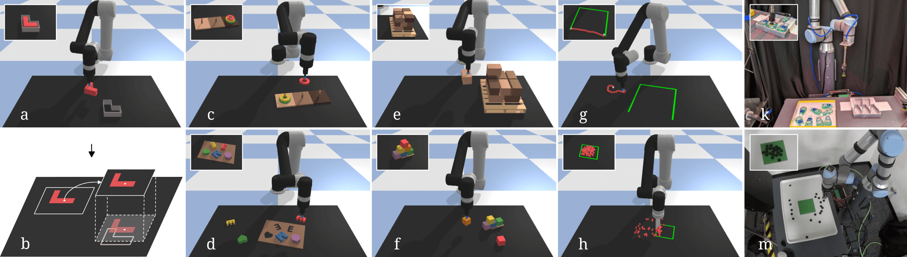
2 관련 연구
객체 중심 표현. 조작을 위한 비전 분야의 상당한 연구가 객체 검출기 및 포즈 추정기 [17, 18, 19, 20, 21]에 전념해 왔다. 이러한 방법들은 종종 객체별 학습 데이터를 필요로 하므로, 보지 못한 새로운 객체가 있는 애플리케이션으로 확장하기 어렵다. 키포인트 [3, 4, 5, 6] 및 조밀한 기술자 [9, 10, 11]를 포함한 대안적 표현은 범주 수준의 일반화 및 변형 가능한 객체 표현이 가능함을 보여주었으나, 여전히 객체 수를 알 수 없는 장면(예: 작은 물체 더미)이나 가려진 객체가 있는 장면을 표현하는 데 어려움을 겪는다. 시각 기반 조작을 위한 엔드투엔드 모델은 이러한 객체 중심 표현과 통합될 때 더 빠르게 학습하여 [10] 샘플 효율성 이점을 제공하지만, 객체 중심성의 데이터 수집 및 표현 제약은 그대로 유지된다. 본 연구에서는 객체 중심 표현 없이도 샘플 효율적인 엔드투엔드 학습이 가능함을 보여주며, 이를 통해 동일한 모델 아키텍처가 새로운 객체, 가변적인 객체 수, 변형 가능한 객체 및 작은 물체 더미가 있는 작업으로 일반화될 수 있도록 한다.
집고 놓기(Pick-and-Place)는 산업적 필요성에 힘입어 로봇 공학에서 오랜 역사를 가지고 있다. 전통적인 시스템은 알려진 객체의 포즈 추정 [17, 18]과 스크립트 기반 경로 계획 및 모션 제어 [22]를 사용한다. 구조화된 환경(예: 제조업)에서는 강력하지만, 이러한 시스템은 비구조화된 환경(예: 물류, 농업, 가정)에 배포하기 어려워, 새로운 객체를 다룰 수 있는 일반적인 집고 놓기 정책 [23, 24, 25, 26, 27, 28, 29, 30]을 달성하기 위해 학습된 모델을 활용하는 것에 대한 관심이 다시 높아지고 있다. 우리는 여러 작업에서 최신 Form2Fit [24]과 성능을 비교 분석하고, 트랜스포터 네트워크가 정밀한 배치, 다단계 시퀀싱 및 폐루프 시각 피드백을 요구하는 작업을 더 잘 처리할 수 있음을 입증한다.
3 방법
시각적 관측 으로부터 로봇의 집고 놓기 행동 을 학습하는 문제를 고려해 보자:
여기서 은 객체를 집기 위해 사용되는 말단 효과기의 포즈이고, 은 객체를 놓기 위한 포즈이다. 두 포즈 모두 작업과 말단 효과기가 사용할 수 있는 자유도에 따라 SE(2) 또는 SE(3)에서 정의될 수 있다. 우리는 마찬가지로 두 개의 말단 효과기 포즈로 매개변수화되는 다른 모션 프리미티브 [22]를 사용한 조작을 고려함으로써 집고 놓기를 넘어 일반화할 수 있다. 예를 들어, 밀기(pushing)를 매개변수화할 수 있는데, 여기서 은 밀기 시작할 때의 말단 효과기 포즈이고, 는 밀기를 완료하기 위해 이동하는 위치이다. 본 연구에서는 두 포즈 모션 프리미티브의 시퀀스로 완료할 수 있는 작업을 고려한다. 다음 섹션에서는 평면 집고 놓기의 맥락에서 우리의 접근 방식을 설명하는 것으로 시작한다. 그런 다음 6자유도 집고 놓기, 순차적 다단계 작업, 그리고 변형 가능한 객체 및 물체 더미에 대한 모션 프리미티브 기반 조작으로의 확장에 대해 논의한다.
3.1 이동 학습 (Learning to Transport)
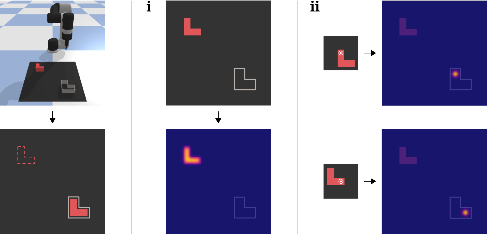
우측의 평면 집기 및 놓기(pick-and-place) 문제를 고려해 보자. 여기서 은 2D 좌표이다. 이 작업에서 목표는 고정형 그립(예: 흡착 그리퍼)으로 빨간색 블록을 집어 올린(pick) 다음, 이를 고정구(fixture)에 놓는(place) 것이다. 이 단순한 설정은 집기 및 놓기 문제의 두 가지 근본적인 측면을 보여준다. (i) 성공적인 집기 포즈의 분포가 존재할 수 있으며(이 분포로부터 이 샘플링될 수 있음, 예: 블록의 표면), (ii) 각 성공적인 집기 포즈에 대해 그에 대응하는 성공적인 놓기 포즈의 분포가 존재한다(이 분포로부터 가 샘플링될 수 있음).
트랜스포터 네트워크(Transporter Networks)의 목표는 객체성(objectness)에 대한 가정 없이 오직 시각적 관측(visual observations)만으로 이러한 분포를 복원하는 것이다. 블록과 고정구에 정형 포즈(canonical pose)를 할당하는 것이 문제를 단순화할 수는 있지만, 이러한 객체 중심 표현(object-centric representations)을 피함으로써 얻는 이점이 많다. 여기에는 보지 못한 객체(unseen objects), 변형 가능한 객체(deformable objects), 셀 수 없이 쌓인 작은 객체 더미를 다룰 수 있는 능력이 포함된다. 따라서 우리는 객체에 대한 사전 정보(예: 3D 모델, 포즈, 클래스 범주, 키포인트 등)를 가정하지 않는다.
트랜스포터 네트워크는 문제를 (i) 집기(picking)와 (ii) 집기 조건부 놓기(pick-conditioned placing)로 분해한다.
우리는 트랜스포터 네트워크를 통해 두 가지 모두에 대한 해결책을 제시한다. 다만 본 논문에서 우리의 주된 기여는 (ii) 이동(transporting)을 통한 집기 조건부 놓기에 있다. 먼저 (i) 집기에 대해 간략히 설명하는 것으로 시작한다.
집기 학습 (Learning Picking). 우리의 시각적 관측 은 순차적 재배치 작업의 타임스텝 에서 픽셀의 정규 그리드 상에 정의된 장면의 투영(예: RGB-D 이미지로부터 재구성됨)이다. 카메라-로봇 캘리브레이션을 통해, 우리는 의 각 픽셀을 해당 위치에서의 집기 행동 에 대응시킬 수 있다. 의 픽셀들에 대한 성공적인 집기의 분포는 본질적으로 다중 모드(multi-modal)일 수 있다. 특히 장면에 동일한 객체의 인스턴스가 여러 개 있거나 객체의 모양에 대칭성이 있는 경우가 그렇다. 이전 연구들 [31, 32, 33]과 마찬가지로, 트랜스포터 네트워크는 집기 성공 여부와 상관관계가 있는 행동 가치 함수(action-value function) 을 모델링하기 위해 완전 합성곱 네트워크(FCN, 비전 분야에서 이미지 세그멘테이션 작업에 흔히 사용됨 [34])를 사용한다 (아키텍처는 Sec. 3.2 참조):
FCN은 본질적으로 이동 등가성(translational equivariance)을 가지며, 이는 공간적 행동 표현(spatial action representations)과 시너지 효과를 낸다. 즉, 장면에서 집어야 할 객체가 이동(translation)하면 집기 포즈 또한 이동한다. 형식적으로, 여기서 등가성은 으로 특징지어질 수 있으며, 여기서 은 이동 변환이다. 공간적 등가성은 비전 기반 집기의 학습 효율성을 향상시키는 것으로 이전에 밝혀진 바 있다 [29, 31, 32, 33, 35]. 이를 위해 FCN은 시각적 특징에 고정된 복잡한 다중 모드 집기 분포를 모델링하는 데 탁월한 성능을 보인다.
공간적으로 일관된 시각적 표현 (Spatially Consistent Visual Representations). 공간적 등가성의 이점은 관측 이 공간적으로 일관될 때 가장 두드러진다. 즉, 객체의 외관이 서로 다른 카메라 뷰에서뿐만 아니라 강체(rigid objects)의 공간적 변환 전반에 걸쳐 일정하게 유지됨을 의미한다. 이는 카메라 뷰와 렌즈 특성에 따라 객체의 외관이 확대/축소되거나 왜곡될 수 있는 원근 이미지(perspective images)와 대조적이다. 실제로는 공간적 일관성이 학습 중 데이터 증강(data augmentation)도 단순화하는데, 에 강체 변환을 적용하면 장면의 객체들이 물리적으로 재배치된 것처럼 보이는 데이터를 얻을 수 있기 때문이다. 그러나 원근 이미지와 마찬가지로, 공간적으로 일관된 표현 역시 부분적인 가시성(partial visibility)과 가려짐(occlusion)으로 인한 한계를 여전히 안고 있다. [33]에서와 같이, 우리는 RGB-D 이미지를 3D 포인트 클라우드로 역투영(unprojecting)한 다음, 각 픽셀 이 3D 공간의 고정된 영역을 나타내는 정사영(orthographic) 투영으로 렌더링하여 공간적으로 일관된 형태로 변환한다 (Fig. 3a). 이전 연구들과 달리, 우리는 이 공간적으로 일관된 표현을 다음에 설명할 이동(transport) 연산에 사용한다.
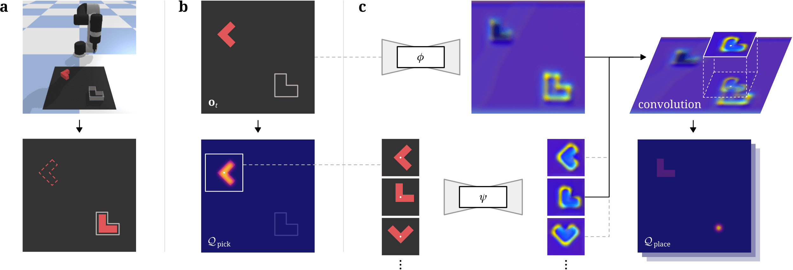
이동을 통한 집기 조건부 놓기 학습 (Learning Pick-Conditioned Placing via Transporting). 공간적으로 일관된 시각적 표현은 우리가 시공간적 이동(transporting)을 수행할 수 있게 한다. 여기서 에 중심을 둔 부분 크롭 으로부터의 조밀한 픽셀 단위 특징(dense pixel-wise features)이 강체 변환된 후, 후보 놓기 포즈 에 중심을 둔 다른 부분 크롭 위에 오버레이(overlay)된다. 여기서 는 집기 전의 관측이다. 직관적으로, 크롭이 객체를 둘러싸고 있다면, 이 연산은 장면의 다른 위치에 있는 객체를 상상하는 것으로 생각할 수 있다. Fig. 3c는 고정구 내에서 빨간색 블록의 배치 위치를 찾기 위해 장면 전체에 블록을 오버레이하는 맥락에서 이를 보여준다.
본 연구에서 트랜스포터 네트워크의 목표는 부분 크롭 을 포즈 세트 에 대해 조밀하게 이동시켜 최적의 배치, 즉 특징 상관관계(feature correlation)가 가장 높은 를 탐색하는 것이다. 이 연산은 비전 추적(visual tracking) 문헌 [36, 37, 38]에서 가 템플릿이고 가 탐색 영역인 탐색 기능, 또는 정보 검색(retrieval systems) 문헌에서 이 쿼리(query)이고 이 키(key)인 것과 유사하다. 우리는 두 개의 심층 모델로부터 얻은 조밀한 특징 임베딩(dense feature embeddings) 및 와의 상호 상관(cross-correlation)을 사용하여 이를 템플릿 매칭 문제로 정식화한다:
| (1) |
여기서 은 놓기 성공 여부와 상관관계가 있는 행동 가치 함수이고, 은 가능한 모든 놓기 포즈의 공간을 포괄한다. 이는 우리의 첫 번째 단순한 빨간색 블록 및 고정구 예시에서 전체에 걸친 2D 이동(translations) 공간과 동일하다. 이 공간적으로 일관되므로, 조밀한 특징 및 의 구조 또한 공간적으로 일관된다. 핵심적인 성질은 변환 을 통한 상호 상관이 원하는 상상의 오버레이를 생성하는 한, Eq. 1이 에 대해 불변(invariant)한다는 점이다. 이를 통해 가능한 모든 집기 [27]에 대해 학습할 필요 없이, 적은 예시만으로도 집기 조건부 놓기를 학습할 수 있다 (Fig. 5). 오버레이되는 것은 RGB-D 픽셀이 아니라 심층 특징이며, 특징 공간의 각 조밀한 픽셀에 대해 수용 영역(receptive field)이 크기 때문에 오버레이의 영향이 크롭 범위를 넘어 확장된다는 점에 유의해야 한다.
평면 회전 SE(2)에서의 학습. 우리의 첫 번째 예시는 2D 이동 공간에서의 집기 및 놓기 행동만을 사용하지만, Fig. 3에서와 같이 및 은 회전을 나타낼 수도 있다. 평면 SE(2) 케이스의 경우, 우리는 SO(2) 회전 공간을 개의 빈(bin)으로 이산화한 다음, 각 빈에 대해 입력 시각적 관측 를 회전시킨다. 이에 따라 는 복셀 그리드 상에 정의되며, 여기서 은 로 이산화된 회전축 상에 위치하고, 및 은 SE(2)의 이 그리드 상에 이산적으로 표현된다. 실제로는 회전된 각 에 대해 한 번씩 FCN을 번 병렬로 실행하고 모든 회전에서 모델 가중치를 공유함으로써 이를 달성한다.
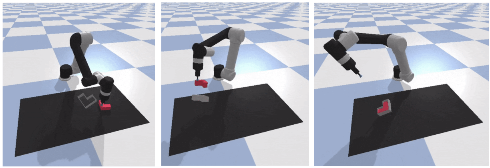
SE(3)에서의 완전 강체 변환 학습. 이전 섹션들에서는 이산화된 공간 상에서 함수를 학습하는 방법을 논의했으나, 강체의 6자유도를 모두 다루기 위해 완전한 SE(3) 케이스로 확장하는 것은 차원의 저주로 인해 6차원 공간을 충분히 이산화하는 것이 불가능해진다. 그러나 흥미롭게도 우리는 이동(transport) 연산이 고차원으로 확장할 수 있게 하는 빌딩 블록임을 발견했으며, SE(3) 놓기가 필요한 작업으로 확장하기 위해 다단계 접근법(multi-stage approach)을 사용한다. 먼저, 이전 섹션에서와 같이 3개의 SE(2) 자유도를 해결하여 추정된 을 생성한다. 그런 다음, 상호 상관 이동 연산을 확장한다. 올바른 이산화된 행동을 분류하기 위해 SE(2) 상에서 단일 채널을 사용하는 대신, 나머지 회전() 및 이동(-높이) 자유도를 회귀(regress)하기 위해 SE(2) 상에서 3개 채널을 사용한다. 우리는 SE(2) 분류에 사용된 및 과 동일한 및 를 사용하되, 채널 서브셋으로부터 3개의 개별 상호 상관()을 수행하고, 상호 상관 이후에 3-헤드 MLP 네트워크 를 통해 학습 가능한 비선형성을 추가한다: . 이러한 이산/연속 하이브리드 접근법은 여러 가지 좋은 특성을 제공한다. 이산 SE(2) 단계는 해당 자유도에서 복잡한 다중 모드 분포를 표현하는 데 유리하며, 이동 연산을 통해 대략적인 SE(2) 정렬이 오버레이되면, 이는 모델이 정밀한 연속 회귀를 수행하도록 돕는 어텐션 메커니즘(attention mechanism) 역할을 한다. 연속 자유도에서의 다중 모드성을 다루기 위해 혼합 밀도(mixture densities)를 회귀할 수 있다. 실제로는 대략적인 SE(2) 정렬이 적용된 후 여러 접근법이 잘 작동할 수 있음을 확인했다. 자세한 내용은 부록을 참조하라. Eq. 1을 반복적으로 사용하는 다단계 SE(3) 분류도 가능하다.
순차적 집기 및 놓기 학습 (Learning Sequential Pick-and-Place). Fig. 1c의 3개 원판 하노이 탑(Towers of Hanoi)과 같이 도전적인 예시를 고려해 보자. 여기서 작업은 더 큰 원판을 더 작은 원판 위에 놓지 않고 첫 번째 탑에서 세 번째 탑으로 3개의 원판을 순차적으로 이동하는 것이다. 이 작업을 완료하려면 7개의 집기 및 놓기 행동을 올바른 순서로 수행해야 한다. 받침대와 원판의 색상이 고유하게 지정된 이 설정에서, 이 작업은 마르코프 성질(Markovian)을 갖는다. 따라서 행동은 시각적 맥락 단서에 직접적으로 조건화될 수 있다. 예를 들어, 다음 집기 및 놓기는 장면에서 관측된 객체의 위치(또는 가려짐으로 인한 부재)에 따라 달라진다. 우리 방법은 상태가 없는(stateless) 방식이지만, 실험을 통해 시각적 피드백을 통해 이러한 순차적 행동을 학습할 수 있음을 보여준다. 이를 가능하게 하려면 FCN의 수용 영역 [39]을 늘려 시각적 관측 의 대부분을 포함하도록 하는 것이 중요하다. 비마르코프(non-Markovian) 작업을 다루기 위해 트랜스포터 네트워크에 메모리를 추가하여 확장하는 것은 흥미로운 향후 연구 과제가 될 것이다.
집기 및 놓기를 넘어선 조작: 변형 가능한 객체 및 객체 더미. 강체의 집기 및 놓기를 넘어, 트랜스포터 네트워크는 두 개의 포즈 프리미티브(two-pose primitives)로 완료할 수 있는 작업으로 일반화될 수 있다. 예를 들어, 변형 가능한 로프를 순차적으로 재배치하여 불완전한 3면 사각형의 두 끝점을 연결하도록 학습하거나(Fig. 1e), 주걱 모양의 말단 장치(end effector)를 사용하여 작은 객체 더미를 원하는 목표 영역으로 순차적으로 밀어 넣도록(Fig. 1h) 학습할 수 있다. 두 경우 모두, 우리의 실험(Sec. 4)은 시각적 피드백을 사용하는 폐루프(closed-loop) 행동을 학습하여 이러한 작업을 완료할 수 있음을 보여준다. 두 작업 모두 강체 변위(rigid displacements)로 모델링할 수 없는 역학(dynamics)이 특징이지만, 우리의 결과는 강체 변위가 비강체 변위를 위한 유용한 사전 정보(prior) 역할을 할 수 있음을 시사한다 [40].
3.2 네트워크 아키텍처 (Network Architecture)
관측 공간 (Observation Space): 테이블탑 조작을 위해, 우리의 시각적 관측 은 m 크기의 테이블탑 작업 공간을 직교 투영한 탑다운 뷰(top-down view)이다. 이는 시뮬레이션에서 알려진 내부 파라미터(intrinsics) 및 외부 파라미터(extrinsics)를 사용하여 보정된 카메라로 촬영한 개의 RGB-D 이미지를 병합하여 생성된다. 이 탑다운 이미지 는 의 픽셀 해상도를 가지며, 각 픽셀은 작업 공간의 3D 공간에서 mm 높이의 수직 기둥을 나타낸다. 이미지 은 색상(RGB)과 바닥으로부터의 스칼라 높이(H) 정보를 모두 포함하고 있어, 딥러닝 모델이 시각적 질감과 기하학적 형상 모두가 풍부한 특징을 학습할 수 있도록 한다.
집기 (Picking): 우리의 집기 모델은 시각적 관측 을 입력으로 받아 집기 성공 여부와 상관관계가 있는 조밀한 픽셀 단위 값인 을 출력하는 단일 피드포워드 FCN이다. 우리의 집기 모델은 아워글래스(hourglass) 인코더-디코더 아키텍처이다. 즉, 12개의 잔차 블록(residual blocks)과 8-스트라이드(인코더에 3개의 2-스트라이드 합성곱, 디코더에 3개의 이선형 업샘플링(bilinear-upsampling) 레이어)를 가진 43레이어 잔차 네트워크(ResNet) [41]이며, 그 뒤에 이미지 전체에 대한 소프트맥스(softmax)가 이어진다. 첫 번째 레이어 이후의 각 합성곱 레이어는 다일레이션(dilation) [42]을 갖추고 있으며, 마지막 레이어 이전에 ReLU 활성화 함수 [43]와 인터리빙(interleaving)된다. 8-스트라이드는 픽셀 예측당 수용 영역(receptive field) 커버리지를 최대화하는 것과 네트워크의 잠재 중간 수준 특징(latent mid-level features)에서 해상도 손실을 최소화하는 것 사이의 균형을 맞추기 위해 선택되었다.
놓기 (Placing): 우리의 놓기 모델은 시각적 관측 을 입력으로 받아 두 개의 조밀한 특징 맵인 쿼리 특징(query features) 과 키 특징(key features) 를 출력하는 투스트림(two-stream) 피드포워드 FCN이다. 여기서 은 특징의 차원 수이다. 우리의 놓기 모델은 집기 모델과 유사한 아워글래스 인코더-디코더 아키텍처를 공유한다. 즉, 각 스트림은 8-스트라이드 43레이어 ResNet이지만, 마지막 레이어에 비선형 활성화 함수가 없다. 을 중심으로 하는 크기의 쿼리 특징의 부분 크롭(partial crop) 은 (가능한 놓기 구성 공간을 커버함)에 의해 변환된 후, 키 특징 맵 와 상호 상관(cross-correlation, 식 1)되어 놓기 성공 여부와 상관관계가 있는 조밀한 픽셀 단위 값을 출력한다: 여기서 은 개의 각도(10∘의 배수)로 이산화된다. 부분 크롭과 가장 높은 상관관계를 제공하는 평행 이동 및 회전 은 를 통해 를 제공한다. 이 연산은 고도로 최적화된 행렬 곱셈(크롭이 평탄화됨) 또는 합성곱(크롭이 합성곱 커널이 됨)으로 구현될 경우 빠르게 수행될 수 있다. 총 추론 시간(집기 및 놓기 모델 모두 포함)은 Nvidia GTX 2080 GPU에서 200ms에 달한다.
3.3 학습: 데모로부터의 학습 (Training: Learning from Demonstrations)
우리는 개의 전문가 데모로 구성된 데이터셋 에 접근할 수 있다고 가정한다. 여기서 각 궤적(trajectory) 는 하나 이상의 관측-행동 쌍 의 시퀀스이다. 실험(Sec. 4)에서, 우리는 태스크당 = 1, 10, 100 또는 1,000개의 데모로부터 학습하는 트랜스포터 네트워크(Transporter Networks)의 능력을 평가한다. 우리의 방법은 태스크별 정보를 입력으로 받지 않으며, 모델당 하나의 태스크에 대해 학습된다(향후 연구에서 다중 태스크를 조사할 수 있음). 학습 과정에서 우리는 데이터셋 에서 관측-행동 쌍을 균일하게 샘플링하며, 이로부터 각 행동 은 각각 이진 원-핫(one-hot) 픽셀 맵 및 을 생성하는 데 사용되는 두 개의 학습 레이블 및 로 풀릴 수 있다. 우리의 학습 손실은 단순히 이러한 원-핫 픽셀 맵과 집기 및 놓기 모델의 출력 사이의 교차 엔트로피(cross-entropy)이다: . 조밀한 확률 맵당 단일 픽셀에 대한 레이블만 가지고 있지만, 그래디언트는 이미지 전체 소프트맥스를 통해 다른 모든 픽셀로 전달된다. 우리는 이 손실 함수가 다중 모드(multi-modal) 비등방성(non-isotropic) 공간 행동 분포를 학습할 수 있음을 확인했다. 회귀를 포함하는 SE(3) 모델의 경우, 각 회귀 채널에 후버 손실(Huber loss)을 사용한다. 검증 성능은 일반적으로 단일 상용 GPU에서 몇 시간 동안 학습한 후에 수렴한다.
4 결과 (Results)
우리는 다양한 태스크에 걸쳐 트랜스포터 네트워크를 평가하기 위해 시뮬레이션과 실제 환경 모두에서 실험을 수행한다. 우리의 목표는 세 가지이다: 1) 트랜스포터 네트워크 내에서 시공간적 구조를 보존하는 것이 샘플 효율성과 일반화 능력을 향상시키는지 조사하고, 2) 이를 엔드투엔드 비전 기반 조작을 위한 일반적인 베이스라인들과 비교하며, 3) 실제 로봇에 배포하기에 실용적임을 입증하는 것이다.
4.1 시뮬레이션 실험 (Simulation Experiments)
| precise | multimodal | multi-step | unseen | |
| Task | placing | placing | sequencing | objects |
| block-insertion (Fig. 3) | ✓ | ✗ | ✗ | ✗ |
| place-red-in-green | ✗ | ✓ | ✗ | ✗ |
| towers-of-hanoi (Fig. 7) | ✓ | ✓ | ✓ | ✗ |
| align-box-corner | ✓ | ✓ | ✗ | ✓ |
| stack-block-pyramid∗ | ✓ | ✓ | ✓ | ✗ |
| palletizing-boxes∗§ | ✓ | ✓ | ✓ | ✗ |
| assembling-kits∗§ [24] | ✓ | ✓ | ✗ | ✓ |
| packing-boxes∗§ | ✓ | ✓ | ✓ | ✓ |
| manipulating-rope∗† | ✓ | ✓ | ✓ | ✗ |
| sweeping-piles∗† [12] | ✓ | ✓ | ✓ | ✗ |
∗올바른 상태 시퀀스가 둘 이상 존재하는 태스크.
†강체 객체의 집기 및 놓기 범위를 벗어나는 태스크.
§산업계에서 흔히 발견되는 태스크.
우리는 베이스라인들과 비교하기 위해 행동 복제(behavior cloning) 시뮬레이션 실험을 사용한다. 본 연구에서는 시뮬레이션을 시뮬레이션-실제 전이(sim-to-real transfer)에 사용하지 않고, 공정한 비교와 아블레이션(ablation)을 위한 일관되고 통제된 환경을 제공하는 수단으로만 사용한다. PyBullet [44]으로 구축된 시뮬레이션 벤치마크 학습 환경인 Ravens는 m 크기의 테이블탑 작업 공간을 내려다보는 흡착 그리퍼가 장착된 Universal Robot UR5e와 작업 공간을 향하는 3개의 시뮬레이션된 640x480 RGB-D 카메라(정면에 하나(로봇을 향함), 로봇 팔의 왼쪽 어깨에 하나, 오른쪽 어깨에 하나 배치됨)로 구성된다. 우리의 방법은 3개의 카메라를 필요로 하지 않으며, 카메라가 많을수록 시각적 커버리지가 향상될 뿐이다. 예를 들어, 우리의 실제 실험에서는 로봇당 1개의 카메라만 사용한다.
태스크 및 메트릭. 시뮬레이션에서 우리는 10개의 이산 시간 테이블탑 조작 태스크에 대해 벤치마크를 수행하며, 이 중 일부는 다단계 시퀀싱을 위해 폐루프(closed-loop) 시각 피드백을 필요로 한다. 우리는 2-포즈 모션 프리미티브 [22]를 사용하여 로봇 말단 장치(흡착 컵 또는 밀기용 스패튤라)를 위치 제어한다. 각 태스크에서 모든 객체(대상 영역 포함)는 학습 및 테스트 중에 작업 공간 내에서 무작위로 위치와 방향이 지정된다. 각 태스크에는 성공적인 및 의 분포를 무작위로 샘플링하여 전문가 데모를 제공하는 스크립트 기반 오라클(oracle)이 함께 제공되며, 이 샘플들은 학습자에게 제공된다. 일부 태스크에는 다중 모드 및 순열이 포함된다. 예를 들어, 블록 쌓기에서 성공적인 6개 블록 피라미드는 각 행 내에서의 블록 순열에는 불변이지만 행 간의 순열에는 불변이 아니다. 성능은 0(실패)부터 100(성공)까지의 메트릭으로 평가된다. 여러 행동의 시퀀싱이 필요한 태스크 중에는 부분 점수가 부여된다. 우리는 각 태스크에 대해 보지 못한 100회의 테스트 실행에 대해 평균을 내어, 학습 중 가장 높은 검증 성능을 달성한 모델의 결과를 보고한다. 자세한 내용은 부록을 참조하라.
베이스라인 방법들. 관련 연구에서 언급했듯이 Form2Fit [24]은 시공간적 이송(visuo-spatial transporting)을 수행하지 않고 대신 매칭 네트워크를 사용한다는 점에서 우리의 방법과 다르다. ConvMLP는 일련의 합성곱 레이어에 이어 공간 소프트맥스(spatial-softmax) 및 다층 퍼셉트론(MLP)을 사용하는 엔드투엔드 문헌 [1]의 일반적인 모델 아키텍처로, 여기서는 두 개의 SE(2) 포즈 시퀀스를 회귀하는 데 사용한다. Form2Fit과 ConvMLP는 트랜스포터 네트워크와 동일한 입력 이미지를 사용하지만, 우리 태스크의 난이도를 파악하기 위해 참값 상태(ground truth state, 객체 포즈 및 3D 바운딩 박스)를 입력으로 사용하는(즉, 완벽한 객체 포즈를 가정하는) 두 가지 베이스라인도 제공한다. GT-State MLP는 이를 입력받아 두 개의 SE(2) 포즈를 회귀하는 MLP이며, 2-step GT-State MLP는 먼저 첫 번째 SE(2) 포즈를 회귀한 다음 이를 관측 벡터에 추가하고 두 번째 SE(2) 포즈를 회귀한다. 다중 모드를 표현하기 위해 ConvMLP, GT-State MLP, 2-step GT-State MLP는 혼합 밀도(mixture densities) [45]를 회귀한다. 우리 방법을 포함한 모든 방법은 무작위 SE(2) 월드 프레임 변환을 포함하여 동일한 데이터 증강(data augmentation)을 사용한다.
결과: 벤치마크 태스크에서의 샘플 효율성 및 일반화
표 2은 각 태스크에 대해 확률적 데모로부터 학습하고, 객체(대상 영역 포함)의 무작위 회전 및 평행 이동이 있는 보지 못한 테스트 환경에서 평가된 베이스라인들의 샘플 효율성을 보여준다. 벤치마크는 까다롭다. 대부분의 베이스라인은 데모 학습 세트에 오버피팅할 수는 있지만, 1,000개의 데모만으로는 일반화 성능이 떨어진다. 일반적으로 트랜스포터 네트워크는 이미지 기반 대안들보다 수십 배 더 나은 샘플 효율성을 달성하며, 참값 상태로 학습된 다층 퍼셉트론보다도 더 나은 샘플 효율성을 제공한다. 자세한 분석은 부록을 참조하라.
| block-insertion | place-red-in-green | towers-of-hanoi | align-box-corner | stack-block-pyramid | ||||||||||||||||
| Method | 1 | 10 | 100 | 1000 | 1 | 10 | 100 | 1000 | 1 | 10 | 100 | 1000 | 1 | 10 | 100 | 1000 | 1 | 10 | 100 | 1000 |
| Transporter Network | 100 | 100 | 100 | 100 | 84.5 | 100 | 100 | 100 | 73.1 | 83.9 | 97.3 | 98.1 | 35.0 | 85.0 | 97.0 | 98.3 | 13.3 | 42.6 | 56.2 | 78.2 |
| Form2Fit [24] | 17.0 | 19.0 | 23.0 | 29.0 | 83.4 | 100 | 100 | 100 | 3.6 | 4.4 | 3.7 | 7.0 | 7.0 | 2.0 | 5.0 | 16.0 | 19.7 | 17.5 | 18.5 | 32.5 |
| Conv. MLP | 0.0 | 5.0 | 6.0 | 8.0 | 0.0 | 3.0 | 25.5 | 31.3 | 0.0 | 1.0 | 1.9 | 2.1 | 0.0 | 2.0 | 1.0 | 1.0 | 0.0 | 1.8 | 1.7 | 1.7 |
| GT-State MLP | 4.0 | 52.0 | 96.0 | 99.0 | 0.0 | 0.0 | 3.0 | 82.2 | 10.7 | 10.7 | 6.1 | 5.3 | 47.0 | 29.0 | 29.0 | 59.0 | 0.0 | 0.2 | 1.3 | 15.3 |
| GT-State MLP 2-Step | 6.0 | 38.0 | 95.0 | 100 | 0.0 | 0.0 | 19.0 | 92.8 | 22.0 | 6.4 | 5.6 | 3.1 | 49.0 | 12.0 | 43.0 | 55.0 | 0.0 | 0.8 | 12.2 | 17.5 |
| palletizing-boxes | assembling-kits | packing-boxes | manipulating-rope | sweeping-piles | ||||||||||||||||
| 1 | 10 | 100 | 1000 | 1 | 10 | 100 | 1000 | 1 | 10 | 100 | 1000 | 1 | 10 | 100 | 1000 | 1 | 10 | 100 | 1000 | |
| Transporter Network | 63.2 | 77.4 | 91.7 | 97.9 | 28.4 | 78.6 | 90.4 | 94.6 | 56.8 | 58.3 | 72.1 | 81.3 | 21.9 | 73.2 | 85.4 | 92.1 | 52.4 | 74.4 | 71.5 | 96.1 |
| Form2Fit [24] | 21.6 | 42.0 | 52.1 | 65.3 | 3.4 | 7.6 | 24.2 | 37.6 | 29.9 | 52.5 | 62.3 | 66.8 | 11.9 | 38.8 | 36.7 | 47.7 | 13.2 | 15.6 | 26.7 | 38.4 |
| Conv. MLP | 31.4 | 37.4 | 34.6 | 32.0 | 0.0 | 0.2 | 0.2 | 0.0 | 0.3 | 9.5 | 12.6 | 16.1 | 3.7 | 6.6 | 3.8 | 10.8 | 28.2 | 48.4 | 44.9 | 45.1 |
| GT-State MLP | 0.6 | 6.4 | 30.2 | 30.1 | 0.0 | 0.0 | 1.2 | 11.8 | 7.1 | 1.4 | 33.6 | 56.0 | 5.5 | 11.5 | 43.6 | 47.4 | 7.2 | 20.6 | 63.2 | 74.4 |
| GT-State MLP 2-Step | 0.6 | 9.6 | 32.8 | 37.5 | 0.0 | 0.0 | 1.6 | 4.4 | 4.0 | 3.5 | 43.4 | 57.1 | 6.0 | 8.2 | 41.5 | 58.7 | 9.7 | 21.4 | 66.2 | 73.9 |
보지 못한 객체로의 일반화. 우리의 벤치마크 태스크 중 3개는 보지 못한 객체로의 일반화를 포함한다(표 1 참조). 보지 못한 객체를 사용하는 키트 조립(kit assembly) 태스크 변형(그림 8에 표시됨)에서 Form2Fit과 트랜스포터 네트워크 간의 성능 격차는 상당히 크다. 원래 논문 [24]에서 사용된 객체 분포를 반영하는 더 단순한 기하학적 형상(예: 원형 디스크, 사각형)을 가진 보지 못한 객체 세트에서는 Form2Fit이 96.3%의 태스크 성공률을 달성한다. 이는 Form2Fit 기술자(descriptors)가 기하학적 구조의 더 큰 차이를 표현할 수 있는 능력은 있지만, 동일한 양의 데이터에서 템플릿 매칭 기반의 우리 딥러닝 모델보다 고해상도 정보를 매칭하는 능력은 떨어진다는 것을 시사한다.
폐루프 시각 피드백을 통한 순차적 조작 학습. 본 연구에서 트랜스포터 네트워크(Transporter Networks)는 현재 타임스텝 동안 시각적 입력으로 제공되는 정보에만 반응하는 무상태(stateless) 모델이다. 그러나 우리의 실험은 이 모델들이 시각적 피드백을 학습할 수 있는 능력을 갖추고 있음을 보여준다. 즉, 이들은 맥락적 시각 단서를 활용하여 자신이 작업의 어느 단계에 있는지 판단하고, 이를 통해 행동 가치 예측의 조건을 설정한다. 예를 들어, 블록 탑이 쓰러지면 이들은 마치 작업을 방금 시작한 것처럼 블록 탑을 다시 쌓을 수 있다. 쓸기(sweeping) 작업 중 실수로 알갱이 물질을 목표 영역 밖으로 밀어내면, 이를 다시 안으로 밀어 넣는다(그림 5). 우리는 회전과 평행이동에 대한 등변성(equivariance) 덕분에 다단계 작업에 대한 데이터가 적더라도 이러한 복구 행동을 학습할 수 있다고 가설을 세운다(표 1 참조). 보충 비디오에서 이러한 창발적 행동의 예시들을 보여준다.
| deterministic | stochastic | |||||||
| Method | 1 | 10 | 100 | 1000 | 1 | 10 | 100 | 1000 |
| Transporter Network | 100 | 100 | 100 | 100 | 100 | 100 | 100 | 100 |
| Form2Fit [24] | 100 | 100 | 100 | 100 | 100 | 30.0 | 45.0 | 45.0 |
| Conv. MLP | 7.0 | 73.0 | 81.0 | 69.0 | 11.0 | 31.0 | 52.0 | 68.0 |
| GT-State MLP | 100 | 100 | 100 | 100 | 21.0 | 77.0 | 100 | 100 |
| GT-State MLP 2-Step | 100 | 100 | 100 | 100 | 53.0 | 70.0 | 100 | 93.0 |
단순화된 환경에서의 샘플 복잡도. 회전이 필요 없고 블록이 항상 동일한 위치에 초기화되며 고정구(fixture)의 위치만 환경에 따라 달라지는, 그림 3에 시각화된 단순화된 평행이동 전용 블록 삽입 작업을 고려해 보자. 이 설정에서 우리는 두 가지 변형의 전문가를 조사한다. (a) , 가 각각 블록과 고정구에 대해 고정되어 있는 결정론적 시연을 제공하는 전문가와, (b) 성공적인 행동의 분포에서 , 를 균등하게 무작위 샘플링하여 확률적 시연을 제공하는 전문가이다. 직관적으로 확률적 시연자는 전문가가 일관되지 않은 더 현실적인 상황을 반영한다. 표 3는 이러한 작업들에 대한 샘플 복잡도 결과를 보여준다. 대부분의 베이스라인은 결정론적 시연에서는 잘 작동하지만, 확률적 시연에서는 어려움을 겪기 시작한다. 트랜스포터 네트워크는 구조적 설계 덕분에 두 경우 모두에서 잘 작동한다. 부록에서 추가적인 외삽(extrapolation) 실험을 보여준다.
| 6DoF block-insertion | ||||
|---|---|---|---|---|
| 1 | 10 | 100 | 1000 | |
| Transporter Net. SE(3) | 38.0 | 76.0 | 84.0 | 91.0 |
| GT-State MLP 3-Step SE(3) | 0.0 | 1.0 | 1.0 | 5.0 |
6자유도 집고 놓기(Pick-and-Place) 학습. 우리는 또한 그림 4에 나타난 6자유도 환경에서 보지 못한 대상 고정구 구성과 확률적 시연을 사용하여 섹션 3.1에서 논의된 SE(3) 공식을 테스트한다. 이 더 도전적인 작업에서, 우리의 모델은 엄격하게 더 쉬운 3자유도 전용 블록 삽입 작업에서 이미지 기반 베이스라인들이 달성한 것보다 훨씬 더 나은 샘플 효율성을 보여준다(표 2 및 4). 또한, 하이브리드 이산-연속 SE(3) 모델은 이산 전용 SE(2) 모델처럼 1-샷 일반화를 하지는 못하지만, 더 큰 관측 및 행동 공간에서 어려움을 겪는 GT-State MLP 모델(표 4)보다 실질적으로 훨씬 더 나은 성능을 보여준다. 이 작업과 모델에 대한 자세한 분석은 부록을 참조하라.
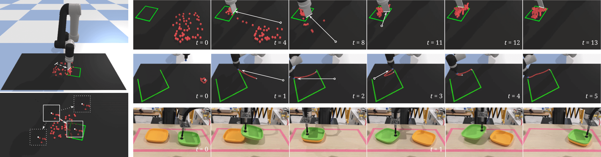
4.2 실제 세계 실험
| Task | Test % | # Samples |
|---|---|---|
| Mouthwash Kit Assembly | 98.9 | 8141 |
| Sweeping Piles of Go Pieces | 98.3 | 6759 |
우리는 실제 UR5e 로봇을 사용하여 키트 조립 및 쓸기 작업(그림 1k 및 1m에 표시됨) 모두에서 트랜스포터 네트워크를 검증한다. 키트 조립의 경우, 로봇은 흡착 그리퍼와 산업용 Photoneo PhoXi 카메라(고해상도 및 정확한 IR 깊이 측정용)를 사용한다. 쓸기의 경우, 로봇은 브러시 말단 효과기(end effector)와 저가형 소비자 등급 Azure Kinect(RGB-D용)를 사용한다. COVID-19 봉쇄로 인해 물리적 접근이 불가능했음에도 불구하고, 우리는 사람들이 원격으로 로봇을 조작하여 캘리브레이션하고, 학습 데이터를 수집하고, 테스트를 수행할 수 있도록 지원하는 Unity 기반 [46] UI를 사용하여 실제 실험을 수행할 수 있었다. 이 실험에서 원격 조작자들은 i) 5개의 병에 든 구강청결제 키트를 반복적으로 조립 및 분해하거나, ii) 녹색 테이프로 표시된 목표 영역으로 작은 바둑돌 더미를 쓸어 넣는 작업을 수행했으며, 스크립트화된 스크램블링 동작을 사용하여 자율적 리셋을 수행했다. 표 5은 모델의 테스트 성능과 13명의 인간 작업자로부터 수집된 전이(transition) 관점에서의 학습 데이터 양(즉, 키트 조립의 경우 집고 놓기 행동, 쓸기의 경우 밀기 행동)을 보여준다. 또한 보충 비디오를 통해 두 작업 모두에서 작동하는 로봇의 정성적 결과를 보여준다. COVID-19로 인해 논문 제출 시점에는 추가적인 정량적 실험이 불가능했다. 추가적인 실험 세부 사항은 부록에 기재되어 있다.
5 결론
본 연구에서는 시각적 입력으로부터 로봇 행동을 매개변수화할 수 있는, 공간적 변위를 추론하는 간단한 모델 아키텍처인 트랜스포터 네트워크를 제안했다. 이 모델은 물체성(objectness)에 대한 가정을 하지 않고, 공간적 대칭성을 활용하며, 블록 피라미드 쌓기부터 보지 못한 물체로 키트 조립하기, 폐루프 피드백을 통해 작은 물체 더미 밀기 등에 이르기까지, 비전 기반 조작 작업을 학습하는 데 있어 엔드투엔드 대안들보다 수십 배 더 뛰어난 샘플 효율성을 보여준다. 현재 한계점으로는 카메라-로봇 캘리브레이션에 민감하다는 점과, 토크/힘 행동을 공간적 행동 공간과 어떻게 통합할지 여전히 불분명하다는 점이 있다. 전반적으로 우리는 이 방향성에 대해 매우 고무되어 있으며, 이를 실시간 고속 제어 및 도구 사용을 포함하는 작업으로 확장할 계획이다.
감사의 글
논문 작성에 유용한 피드백을 주신 Ken Goldberg, Razvan Surdulescu, Daniel Seita, Ayzaan Wahid, Vincent Vanhoucke, Anelia Angelova께 특별히 감사드린다. 또한 운영 및 하드웨어를 지원해 준 Sean Snyder, Jonathan Vela, Larry Bisares, Michael Villanueva, Brandon Hurd, 소프트웨어 인프라를 지원해 준 Robert Baruch, UI에 기여해 준 Jared Braun, PyBullet에 대해 조언해 준 Erwin Coumans, 비디오 내레이션을 맡아준 Laura Graesser께도 감사드린다.
References
- Levine et al. [2016] S. Levine, C. Finn, T. Darrell, and P. Abbeel. End-to-end training of deep visuomotor policies. The Journal of Machine Learning Research (JMLR), 2016.
- Kalashnikov et al. [2018] D. Kalashnikov, A. Irpan, P. Pastor, J. Ibarz, A. Herzog, E. Jang, D. Quillen, E. Holly, M. Kalakrishnan, V. Vanhoucke, et al. Qt-opt: Scalable deep reinforcement learning for vision-based robotic manipulation. Conference on Robot Learning (CoRL), 2018.
- Manuelli et al. [2019] L. Manuelli, W. Gao, P. Florence, and R. Tedrake. kpam: Keypoint affordances for category-level robotic manipulation. International Symposium on Robotics Research (ISRR), 2019.
- Kulkarni et al. [2019] T. D. Kulkarni, A. Gupta, C. Ionescu, S. Borgeaud, M. Reynolds, A. Zisserman, and V. Mnih. Unsupervised learning of object keypoints for perception and control. NeurIPS, 2019.
- Nagabandi et al. [2020] A. Nagabandi, K. Konolige, S. Levine, and V. Kumar. Deep dynamics models for learning dexterous manipulation. Conference on Robot Learning (CoRL), 2020.
- Liu et al. [2020] X. Liu, R. Jonschkowski, A. Angelova, and K. Konolige. Keypose: Multi-view 3d labeling and keypoint estimation for transparent objects. IEEE Conference on Computer Vision and Pattern Recognition (CVPR), 2020.
- Mees et al. [2017] O. Mees, N. Abdo, M. Mazuran, and W. Burgard. Metric learning for generalizing spatial relations to new objects. IEEE/RSJ International Conference on Intelligent Robots and Systems (IROS), 2017.
- Jund et al. [2018] P. Jund, A. Eitel, N. Abdo, and W. Burgard. Optimization beyond the convolution: Generalizing spatial relations with end-to-end metric learning. IEEE International Conference on Robotics and Automation (ICRA), 2018.
- Florence et al. [2018] P. R. Florence, L. Manuelli, and R. Tedrake. Dense object nets: Learning dense visual object descriptors by and for robotic manipulation. Conference on Robot Learning (CoRL), 2018.
- Florence et al. [2019] P. Florence, L. Manuelli, and R. Tedrake. Self-supervised correspondence in visuomotor policy learning. IEEE Robotics and Automation Letters (RA-L), 2019.
- Sundaresan et al. [2020] P. Sundaresan, J. Grannen, B. Thananjeyan, A. Balakrishna, M. Laskey, K. Stone, J. E. Gonzalez, and K. Goldberg. Learning rope manipulation policies using dense object descriptors trained on synthetic depth data. IEEE International Conference on Robotics and Automation (ICRA), 2020.
- Suh and Tedrake [2020] H. Suh and R. Tedrake. The surprising effectiveness of linear models for visual foresight in object pile manipulation. Workshop on Algorithmic Foundations of Robotics (WAFR), 2020.
- Kondor and Trivedi [2018] R. Kondor and S. Trivedi. On the generalization of equivariance and convolution in neural networks to the action of compact groups. International Conference on Machine Learning (ICML), 2018.
- Cohen and Welling [2016] T. Cohen and M. Welling. Group equivariant convolutional networks. International Conference on Machine Learning (ICML), 2016.
- Platt et al. [2019] R. Platt, C. Kohler, and M. Gualtieri. Deictic image mapping: An abstraction for learning pose invariant manipulation policies. AAAI Conference on Artificial Intelligence, 2019.
- Brockman et al. [2016] G. Brockman, V. Cheung, L. Pettersson, J. Schneider, J. Schulman, J. Tang, and W. Zaremba. Openai gym. arXiv preprint arXiv:1606.01540, 2016.
- Yoon et al. [2003] Y. Yoon, G. N. DeSouza, and A. C. Kak. Real-time tracking and pose estimation for industrial objects using geometric features. IEEE International Conference on Robotics and Automation (ICRA), 2003.
- Zhu et al. [2014] M. Zhu, K. G. Derpanis, Y. Yang, S. Brahmbhatt, M. Zhang, C. Phillips, M. Lecce, and K. Daniilidis. Single image 3d object detection and pose estimation for grasping. ICRA, 2014.
- Zeng et al. [2017] A. Zeng, K.-T. Yu, S. Song, D. Suo, E. Walker, A. Rodriguez, and J. Xiao. Multi-view self-supervised deep learning for 6d pose estimation in the amazon picking challenge. IEEE International Conference on Robotics and Automation (ICRA), 2017.
- Deng et al. [2020] X. Deng, Y. Xiang, A. Mousavian, C. Eppner, T. Bretl, and D. Fox. Self-supervised 6d object pose estimation for robot manipulation. IEEE International Conference on Robotics and Automation (ICRA), 2020.
- Wang et al. [2019] H. Wang, S. Sridhar, J. Huang, J. Valentin, S. Song, and L. J. Guibas. Normalized object coordinate space for category-level 6d object pose and size estimation. Computer Vision and Pattern Recognition (CVPR), 2019.
- Frazzoli et al. [2005] E. Frazzoli, M. A. Dahleh, and E. Feron. Maneuver-based motion planning for nonlinear systems with symmetries. IEEE Transactions on Robotics (T-RO), 2005.
- Gualtieri et al. [2018] M. Gualtieri, A. ten Pas, and R. Platt. Pick and place without geometric object models. IEEE International Conference on Robotics and Automation (ICRA), 2018.
- Zakka et al. [2020] K. Zakka, A. Zeng, J. Lee, and S. Song. Form2fit: Learning shape priors for generalizable assembly from disassembly. IEEE International Conference on Robotics and Automation (ICRA), 2020.
- Hundt et al. [2020] A. Hundt, B. Killeen, N. Greene, H. Wu, H. Kwon, C. Paxton, and G. D. Hager. “good robot!”: Efficient reinforcement learning for multi-step visual tasks with sim to real transfer. IEEE Robotics and Automation Letters (RA-L), 2020.
- Berscheid et al. [2020] L. Berscheid, P. Meißner, and T. Kröger. Self-supervised learning for precise pick-and-place without object model. IEEE Robotics and Automation Letters (RA-L), 2020.
- Wu et al. [2020] Y. Wu, W. Yan, T. Kurutach, L. Pinto, and P. Abbeel. Learning to manipulate deformable objects without demonstrations. Robotics: Science and Systems (RSS), 2020.
- Devin et al. [2020] C. Devin, P. Rowghanian, C. Vigorito, W. Richards, and K. Rohanimanesh. Self-supervised goal-conditioned pick and place. arXiv preprint arXiv:2008.11466, 2020.
- Khansari et al. [2020] M. Khansari, D. Kappler, J. Luo, J. Bingham, and M. Kalakrishnan. Action image representation: Learning scalable deep grasping policies with zero real world data. IEEE International Conference on Robotics and Automation (ICRA), 2020.
- Song et al. [2020] S. Song, A. Zeng, J. Lee, and T. Funkhouser. Grasping in the wild: Learning 6dof closed-loop grasping from low-cost demonstrations. IEEE Robotics and Automation Letters (RA-L), 2020.
- Zeng et al. [2018] A. Zeng, S. Song, K.-T. Yu, E. Donlon, F. R. Hogan, M. Bauza, D. Ma, O. Taylor, M. Liu, E. Romo, et al. Robotic pick-and-place of novel objects in clutter with multi-affordance grasping and cross-domain image matching. International Conference on Robotics and Automation (ICRA), 2018.
- Morrison et al. [2018] D. Morrison, P. Corke, and J. Leitner. Closing the loop for robotic grasping: A real-time, generative grasp synthesis approach. Robotics: Science and Systems (RSS), 2018.
- Zeng et al. [2018] A. Zeng, S. Song, S. Welker, J. Lee, A. Rodriguez, and T. Funkhouser. Learning synergies between pushing and grasping with self-supervised deep reinforcement learning. IEEE/RSJ International Conference on Intelligent Robots and Systems (IROS), 2018.
- Long et al. [2015] J. Long, E. Shelhamer, and T. Darrell. Fully convolutional networks for semantic segmentation. IEEE Conference on Computer Vision and Pattern Recognition (CVPR), 2015.
- [35] A. Zeng. Learning Visual Affordances for Robotic Manipulation. PhD thesis, Princeton University.
- Li et al. [2019] B. Li, W. Wu, Q. Wang, F. Zhang, J. Xing, and J. Yan. Siamrpn++: Evolution of siamese visual tracking with very deep networks. Conference on Computer Vision and Pattern Recognition, 2019.
- Bertinetto et al. [2016] L. Bertinetto, J. Valmadre, J. F. Henriques, A. Vedaldi, and P. H. Torr. Fully-convolutional siamese networks for object tracking. European Conference on Computer Vision (ECCV), 2016.
- Tao et al. [2016] R. Tao, E. Gavves, and A. W. Smeulders. Siamese instance search for tracking. IEEE Conference on Computer Vision and Pattern Recognition (CVPR), 2016.
- Luo et al. [2016] W. Luo, Y. Li, R. Urtasun, and R. Zemel. Understanding the effective receptive field in deep convolutional neural networks. Advances in Neural Information Processing Systems (NeurIPS), 2016.
- Seita et al. [2020] D. Seita, P. Florence, J. Tompson, E. Coumans, V. Sindhwani, K. Goldberg, and A. Zeng. Learning to rearrange deformable cables, fabrics, and bags with goal-conditioned transporter networks. arXiv preprint arXiv:2012.03385, 2020.
- He et al. [2016] K. He, X. Zhang, S. Ren, and J. Sun. Deep residual learning for image recognition. IEEE Conference on Computer Vision and Pattern Recognition (CVPR), 2016.
- Yu and Koltun [2016] F. Yu and V. Koltun. Multi-scale context aggregation by dilated convolutions. International Conference on Learning Representations, 2016.
- Nair and Hinton [2010] V. Nair and G. E. Hinton. Rectified linear units improve restricted boltzmann machines. International Conference on Machine Learning (ICML), 2010.
- Coumans and Bai [2016] E. Coumans and Y. Bai. Pybullet, a python module for physics simulation for games, robotics and machine learning. GitHub Repository, 2016.
- Bishop [1994] C. M. Bishop. Mixture density networks. Aston University, 1994.
- Unity Technologies [Version: 2018.4.0f1] Unity Technologies. Unity game engine. Version: 2018.4.0f1. URL https://unity.com.
- Schmidt et al. [2016] T. Schmidt, R. Newcombe, and D. Fox. Self-supervised visual descriptor learning for dense correspondence. IEEE Robotics and Automation Letters (RA-L), 2016.
- Goroshin et al. [2015] R. Goroshin, M. F. Mathieu, and Y. LeCun. Learning to linearize under uncertainty. Advances in Neural Information Processing Systems (NeurIPS), 2015.
- Szegedy et al. [2015] C. Szegedy, W. Liu, Y. Jia, P. Sermanet, S. Reed, D. Anguelov, D. Erhan, V. Vanhoucke, and A. Rabinovich. Going deeper with convolutions. IEEE Conference on Computer Vision and Pattern Recognition (CVPR), 2015.
- Rahmatizadeh et al. [2018] R. Rahmatizadeh, P. Abolghasemi, L. Bölöni, and S. Levine. Vision-based multi-task manipulation for inexpensive robots using end-to-end learning from demonstration. ICRA, 2018.
- Mildenhall et al. [2020] B. Mildenhall, P. P. Srinivasan, M. Tancik, J. T. Barron, R. Ramamoorthi, and R. Ng. Nerf: Representing scenes as neural radiance fields for view synthesis. European Conference on Computer Vision (ECCV), 2020.
- Sitzmann et al. [2020] V. Sitzmann, J. N. Martel, A. W. Bergman, D. B. Lindell, and G. Wetzstein. Implicit neural representations with periodic activation functions. Advances in Neural Information Processing Systems (NeurIPS), 2020.
- Kingma and Ba [2015] D. P. Kingma and J. Ba. Adam: A method for stochastic optimization. International Conference on Learning Representations (ICLR), 2015.
6 부록
부록은 Ravens 시뮬레이션 프레임워크에서의 작업 및 평가 지표 설명, 추가 실험 결과, 분석, 소거 연구(ablation studies), 그리고 실제 시스템 세부 사항으로 구성되어 있다.
6.1 시뮬레이션 실험, 실제 세계 실험 및 COVID-19
본문에서 소개한 바와 같이, 우리는 베이스라인 및 소거 연구와의 일관된 비교 환경을 제공하기 위한 수단으로 Ravens 시뮬레이션 환경에서 실험을 수행한다. 시뮬레이션에서 평가된 모델은 시뮬레이션 데이터로만 학습된다. 마찬가지로 실제 세계에서 평가된 모델은 실제 데이터로만 학습된다. 시뮬레이션에서는 실제 환경으로 전이할 수 없는 가정들을 배제한다. 즉, 관측 데이터는 640x480 RGB-D 이미지와 카메라 파라미터만을 포함하며, 행동은 말단 효과기 포즈(역운동학을 통해 관절 위치로 변환됨)이다. 이에 대한 유일한 예외는 실측 상태 정보(예: 물체 포즈, 경계 상자, 색상)를 입력으로 받는 MLP를 학습하는 GT-State 베이스라인이며, 이는 많은 작업에서 트랜스포터 네트워크보다 샘플 효율성이 떨어지는 것으로 나타났다. Ravens의 한계점은 렌더링 소프트웨어 스택이 실제 데이터에서 흔히 발견되는 노이즈 특성(예: 카메라 캘리브레이션의 부정확성(내재적 및 외재적 파라미터), 보급형 깊이 센서의 노이즈)을 완전히 반영하지 못할 수 있다는 점이다. 따라서 우리는 원격 조작된 시연 데이터를 사용하여 실제 시스템(세부 사항은 섹션 6.14 참조)에서도 제안하는 방법을 테스트하고, 보충 비디오를 통해 정성적 결과를 제시한다. COVID-19 기간 동안 물리적 접근이 제한되어 실제 로봇에 대한 광범위한 정량적 실험을 수행하는 것은 어려웠다.
6.2 Ravens 시뮬레이션 프레임워크
우리의 시뮬레이션 프레임워크인 Ravens에서, 각 작업은 성공적인 집기(picking) 및 놓기(placing) 행동의 분포를 무작위로 샘플링하여 전문가 시연을 제공하는 스크립트 기반 오라클(oracle)과 함께 제공되며, 이 샘플들은 학습자에게 제공된다. Ravens는 또한 본 연구의 범위를 벗어나는 다양한 분야를 연구하는 데 유용한 몇 가지 속성을 가지고 있다. 여기에는 다음이 포함된다: 1) 알고리즘이 학습 효율성을 향상시키기 위해 불확실성이 있는 특정 순간에 오라클에 질의할 수 있는 능동 학습(active learning), 2) 모든 작업에 대해 부분적인 점수를 제공하는 보상 함수를 제공하는 강화 학습(reinforcement learning, 본 연구에서는 평가용으로만 사용됨), 3) 카메라 매개변수(예: 외부 매개변수)가 행동에 의해 정의되어(본 실험에서는 정적이지만 동적일 수 있음) 카메라 위치와 방향의 능동적인 제어를 통해 학습을 개선하는 알고리즘을 연구할 기회를 제공하는 능동 인지(active perception)가 있다.
학습과 테스트 모두에서 모든 객체(대상 영역 포함)는 작업 공간 내에 무작위로 배치되고 방향이 지정된다. 단 하나의 시연만 제공되는 경우에 성공하려면, 학습자는 보지 못한 객체 구성에 대해 불변성(invariant)을 가져야 한다. 작업의 다중 모드성(multi-modality) 또는 순차적 순열에 대한 정보는 시연의 분포를 통해서만 제공된다. 예를 들어, 하노이의 탑(Towers of Hanoi)에서 원판을 이동하는 것은 단 하나의 올바른 상태 시퀀스만 가질 수 있지만, 각 원판을 집거나 놓는 방법에 대한 분포는 여러 시연으로부터 학습된다. 또는, 동일한 상자들을 팔레트에 쌓을 때(palletizing), 팔레트의 각 레이어에 걸쳐 상자 배치를 전치(transpose)해야 하며, 상자가 쓰러지는 것을 방지하기 위해 이미 쌓여 있는 다른 상자 위에 안정적으로 쌓아야 한다. 본 실험에서 Transporter Networks는 시각 데이터셋을 통한 사전 학습 없이 처음부터(from scratch) 학습된다. 새로운 작업으로의 더 효율적인 일반화를 위해 다중 작업 학습(multi-task training)을 탐구하는 것은 흥미로운 향후 연구 과제이다.
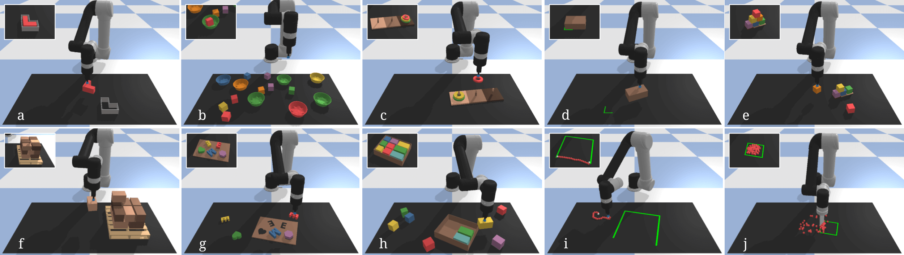
6.3 Ravens-10 벤치마크 작업 세부 정보
10개의 작업 세트(그림 6에 예시됨)가 우리의 Ravens-10 벤치마크를 구성한다. 각 작업에서 에이전트는 두 개의 SE(2) 말단 효과기(end effector) 포즈 시퀀스로 매개변수화된 모션 프리미티브를 사용하여 행동한다. 모션 프리미티브를 정의하는 두 포즈가 SE(2)에 있지만, 평면 외(out-of-plane) 움직임을 포함하는 모션 프리미티브 덕분에 3D 상의 조작 행동(예: 상자 위에 블록을 쌓는 등)을 여전히 달성할 수 있다.
block-insertion: L자 모양의 빨간색 블록을 집어서 그에 대응하는 구멍이 있는 L자 모양의 고정틀(fixture)에 넣는 작업이다. 블록의 직경은 8cm이고 구멍의 직경은 9cm이다. 블록과 고정틀의 구성은 작업 공간 내에서 무작위로 샘플링되며, 서로 충돌하거나 작업 공간 경계를 부분적으로 벗어나는 경우는 제외된다.
place-red-in-green: 시각적 방해물(예: 무작위로 배치된 다른 색상의 블록과 그릇) 사이에서 빨간색 블록을 집어 초록색 그릇에 넣는 작업이다. 여러 개의 빨간색 블록 및/또는 여러 개의 초록색 그릇이 있을 수 있으며, 블록보다 그릇이 더 많을 확률이 무작위로 존재한다. 이 작업은 여러 후보 집기 및 놓기 위치를 처리해야 한다. 그릇이 블록보다 두 배 크기 때문에 정밀함을 요구하지는 않는다. 빨간색 블록과 초록색 그릇이 먼저 작업 공간에 추가된 다음, 10개의 객체(다른 색상의 블록 또는 그릇)가 충돌이 없는 구성으로 무작위로 생성된다.
towers-of-hanoi: 한 페그(peg)에 초기화된 3개의 원판이 모두 다른 페그로 이동하고, 큰 원판 위에는 작은 원판만 놓일 수 있도록 원판을 순차적으로 집고 놓는 작업이다. 이 작업을 완료하려면 특정 순서대로 원판을 7번 집고 놓는 시퀀스가 필요하다. 평가 중에는 다음에 어떤 원판을 집어야 하는지에 대한 정보가 제공되지 않으며, 알고리즘은 다른 원판의 위치나 (가려짐으로 인한) 부재와 같은 맥락적 시각 단서로부터 이를 추론해야 한다. 이는 마르코프 성질을 가진 시각 기반 조작 작업의 순차적 의미론(sequential semantics)을 추론하는 학습자의 능력을 테스트한다. 그림 7은 이 작업, 참값(ground truth) 시퀀스, 집기 행동 분포, 놓기 행동 분포(이동 전용 놓기의 경우 단봉형(unimodal), SE(2) 놓기의 경우 나선형)를 보여준다. 3개 페그의 베이스는 작업 공간 내에 무작위로 구성되며, 원판은 베이스의 가장 밝은 쪽에 있는 페그에 초기화된다.
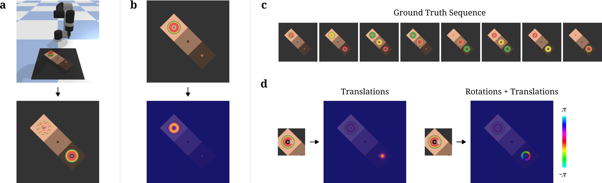
align-box-corner: 무작위 크기의 상자를 집어서 테이블 위에 다시 배치하여 상자의 모서리 중 하나를 테이블 위에 표시된 초록색 L자 모양 마커에 맞추는 작업이다. 이 작업은 정밀함과 새로운 상자 크기에 일반화하는 능력을 요구한다. 상자의 모서리 중 어느 하나라도 초록색 마커에 정렬되면 작업 성공으로 판정된다. 마커와 상자는 상자가 마커와 겹치지 않도록 작업 공간 내에 무작위로 구성된다.
stack-block-pyramid: 6개의 블록(각각 다른 색상)을 순차적으로 집어서 3-2-1 형태의 피라미드로 쌓는 작업이다. 맨 아래의 블록 3개는 보라색, 초록색, 파란색 블록만 될 수 있다. 중간의 블록 2개는 주황색 또는 노란색 블록만 될 수 있다. 맨 위의 블록은 빨간색만 될 수 있다. 성공적인 피라미드는 각 행 내에서의 블록 순열에는 불변하지만, 행 사이의 순열에는 불변하지 않는다. 블록과 피라미드의 베이스는 충돌이 없는 구성으로 무작위로 생성된다.
palletizing-boxes: 고정된 크기의 상자들을 집어서 팔레트 위에 쌓는 작업이다. 실제 안정성 제약 조건을 모방하기 위해, 상자 배치는 팔레트의 각 레이어에 걸쳐 전치되어야 한다. 상자의 수는 고정되어 있으며, 각 상자는 집고 놓기 행동 전에 작업 공간에 생성된다.
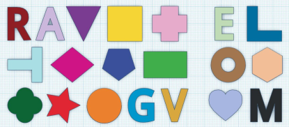
assembling-kits: 서로 다른 모양의 객체들을 집어서 보드 위의 대응하는 위치(객체의 대응하는 실루엣으로 시각적으로 표시됨)에 놓는 작업이다. 각 에피소드마다 20개의 세트 중에서 복원 추출로 5개의 객체가 무작위로 선택된다: 14개는 학습 중에 사용되고(왼쪽), 6개는 테스트를 위해 제외된다(오른쪽). 이 작업은 정밀한 놓기와 "사물들이 어떻게 서로 맞춰지는지"에 대한 개념을 학습하여 새로운 객체로 일반화하는 능력을 요구한다 [24]. 키트와 5개의 객체는 충돌이 없는 구성으로 무작위로 생성된다.
packing-boxes: 무작위 크기의 상자들을 무작위 크기의 컨테이너에 빽빽하게 집어넣는 작업이다. 이 작업은 벤치마크에서 가장 어려운 작업으로, 객체들을 빽빽하게 맞추기 위해 시각적 단서에 의존할 뿐만 아니라 컨테이너 커버리지를 최대화하는 방식으로 객체의 순서를 정하는 것을 암묵적으로 학습해야 한다. 초기화 중에 컨테이너 크기가 먼저 무작위로 샘플링된 다음, 이진 탐색 트리(각 차원별 최소 크기 5cm)를 사용하여 무작위로 분할된다. 그런 다음 각 분할 영역은 개별 상자의 크기를 매개변수화하며, 상자들은 충돌이 없는 구성으로 작업 공간에 개별적으로 생성된다.
manipulating-rope: 변형 가능한 로프를 조작하여 불완전한 3면 사각형(초록색으로 표시됨)의 두 끝점을 연결하는 작업이다. 케이블은 작업 공간에 무작위로 형성된 더미로 초기화되며, 이를 엉킴을 풀고 사각형에 정렬해야 한다. 이 작업은 로프를 점진적으로 조정하기 위해 폐루프 시각 피드백을 사용하여 행동을 시퀀싱해야 한다. 로프는 작업 공간에 무작위로 떨어뜨려진 20개의 관절형 구형 비드 세트로 구현된다. 3면 사각형은 작업 공간 내에 무작위로 구성된다.
sweeping-piles: 작은 객체 더미(무작위로 초기화됨)를 초록색 경계로 표시된 테이블 위의 원하는 목표 영역으로 밀어 넣는 작업이다. 이 순차적 작업([12]에서 영감을 받음)은 폐루프 시각 피드백을 통해 밀기 행동을 시퀀싱하고 작은 객체 더미를 처리해야 한다. 이 작업에서는 흡착 말단 효과기가 주걱(spatula)으로 교체된다. 작은 객체들과 목표 영역은 작업 공간 내에 무작위로 초기화된다.
6.4 추가 작업
Ravens-10 작업 외에도, 본 논문에서는 분석을 위해 두 가지 다른 작업을 추가로 사용하였다. 첫 번째는 확률적 데모와 결정론적 데모 간의 차이를 테스트하고(Sec. 4), 시각화가 가능할 정도로 충분히 작은 자유도를 가진 보간/외삽 실험을 수행하기 위한 단순화된 테스트 환경을 제공하는 것이었다(Sec. 6.10). 두 번째 작업은 Transporter Networks의 SE(3) 변형을 테스트하는 것이었다.
2DoF 단순화된 블록 삽입(2DoF simplified block-insertion): 이 작업은 다음을 제외하고는 block-insertion 작업과 동일하다. (i) 블록은 항상 동일한 시작 구성에 있고, (ii) 고정구(fixture)는 평행 이동만 변한다. 환경 초기화는 총 2자유도를 가진다.
6DoF 블록 삽입(6DoF block insertion): 이 작업은 고정구가 6자유도로 변하여 SE(3) 배치가 필요하다는 점을 제외하고는 block-insertion 작업과 동일하다. 테이블 평면 자유도 외에도 고정구는 높이()뿐만 아니라 평면 외의 두 회전 자유도에서도 변하며, 이는 roll과 pitch로 표현될 수 있다. 블록은 SE(2)에서만 변한다. 환경 초기화는 총 9자유도를 가진다.
6.5 평가 지표(Evaluation Metrics)
시뮬레이션에서 각 작업의 성능은 다음 두 가지 방법 중 하나로 평가된다.
포즈: 대상 포즈로의 물체 평행 이동 및 회전이 각각 임계값 cm 및 미만인 경우이다. 작업을 완료하기 위해 여러 행동을 순차적으로 수행해야 하는 경우, 성공적인 각 행동(물체가 올바른 포즈로 이동한 경우)은 부분 보상 을 반환한다. 작업을 완료했을 때의 총 보상 합은 항상 1이다. 물체의 대칭성이 고려된다. 작업: block-insertion, towers-of-hanoi, place-red-in-green, align-box-corner, stack-block-pyramid, assembling-kits.
영역(Zone): 대상 영역 내 객체의 비율이다. 각 객체의 3D 바운딩 박스를 2cm3 복셀(voxel)로 이산화한다. 총 보상은 대상 영역 내의 총 복셀 비율이다. 대상 작업: palletizing-boxes, packing-boxes, manipulating-cables, sweeping-piles. palletizing-boxes 및 packing-boxes에서 총 보상 을 달성하려면 모든 객체를 대상 영역에 조밀하게 맞추어야 한다(즉, 를 달성하는 것은 첫 번째 을 달성하는 것보다 기하급수적으로 더 어렵다).
6.6 데이터 증강(Data Augmentation)
딥러닝 방법에서 흔히 그렇듯이, 데이터 증강이 Transporter Nets의 일반화 성능에 상당한 이점을 줄 수 있음을 발견했다. 본 논문에서 베이스라인과의 실험적 비교를 통제하기 위해, 모든 방법은 동일한 데이터 증강 분포를 사용했다. 구체적으로, 월드 프레임 에 대한 무작위 SE(2) 변환 을 샘플링하고, 데이터가 월드 프레임이 아닌 증강 프레임 에서 관찰된 것처럼 모든 관측치(이미지 또는 GT-State 방법의 경우 객체 포즈)를 조정했다. 이 증강은 테이블 평면 위 객체의 절대적인 위치가 작업에 중요하지 않다는 가정을 전제로 하며, 이는 실제로 보여진 모든 작업에 해당되었다. 이 분포는 SE(2)의 3자유도를 따라 증강을 제공하지만, 객체 간의 서로 다른 상대적 구성을 상상하는 것과 같은 다른 증강은 적용하지 않는다. 이는 여러 객체가 포함된 특정 작업에서는 실현 가능한 가정이 아니기 때문이다.
6.7 추가 베이스라인 세부 정보
Form2Fit [24]은 집기 및 놓기(pick-and-place)를 위한 최신 방법으로(Devin et al. [28]과도 유사함), 집기 행동과 놓기 행동을 연관시키기 위해 조밀한 시각적 기술자(dense visual descriptors) [9, 47]를 계산하는 매칭 네트워크를 사용한다. 공정한 비교를 위해 유사한 매개변수 수를 가진 43레이어 ResNet 백본을 사용하는 저자 제공 Form2Fit 구현을 사용한다.
ConvMLP는 픽셀 입력으로부터 제어 정책을 학습하기 위해 [1]에서 처음 제안된 모델 아키텍처로, 엔드투엔드(end-to-end) 문헌에서 흔히 사용된다. 일반적으로 이 아키텍처는 실시간 연속 제어에 사용되며 원래 관절 토크 행동 공간과 함께 사용되었지만, 여기서는 공간적 행동 공간을 갖는 모션 프리미티브 기반 설정에 시도해 보았다. 입력 이미지는 Transporter Networks 및 Form2Fit과 동일하게 RGB-D 데이터로부터 하향식으로 재구성된 뷰이다. 아키텍처는 일련의 3개 합성곱 레이어에 이어 공간적 soft(arg)max [48] 및 두 SE(2) 말단 장치(end-effector) 포즈의 6차원 벡터를 회귀하는 다층 퍼셉트론(MLP)으로 구성된다. 사용된 아키텍처는 [1]와 거의 동일하지만 다음과 같은 변경 사항이 있다. (i) 원래 논문에서 사용된 64, 32, 16 대신 64, 64, 64의 채널 깊이를 사용했다. (ii) 128, 128의 MLP 레이어 너비를 사용했다. (iii) 다중 모드성(multi-modality)을 처리하기 위해 직접 회귀 대신 혼합 밀도(mixture densities) [45]를 회귀하도록 MLP를 사용했다. (iv) 깊이(depth)를 3개 채널로 복제하고 별도의 7x7 합성곱 레이어 하나로 처리한 후 첫 번째 레이어 이후에 연결(concatenation)을 통해 RGB와 융합함으로써 네트워크에 깊이 이미지 입력을 추가했다. 모델에 깊이 이미지 입력을 추가한 것은 깊이를 사용하는 다른 이미지 기반 옵션들과 더 직접적으로 비교하기 위함이었다. [1]에서와 같이, 첫 번째 RGB 합성곱 레이어에 GoogLeNet [49]의 ImageNet 사전 학습된 가중치를 사용했으며, 이는 안정적인 학습과 일반화에 도움이 됨을 발견했다. 이 네트워크는 Form2Fit 및 Transporter Nets에 사용된 네트워크(43레이어)보다 10배 더 얕지만(3레이어), Transporter Networks에 사용된 것과 동일한 43레이어 백본 네트워크를 공간적 soft(arg)max 및 MLP와 함께 학습시키려고 시도했으나, 더 얕은 3레이어 네트워크가 적어도 테스트된 하이퍼파라미터에 대해 더 나은 일반화를 달성함을 발견했다. 많은 작업이 다중 모드 정책을 포함하므로, 이러한 다중 모드성을 처리하는 방식으로 네트워크를 학습시키는 것이 필요했다. 혼합 밀도 네트워크(MDN) [45]는 이전에 엔드투엔드 조작 제어에 사용된 적이 있으며, 예를 들어 [50]이 있다. [45]에서와 같이, 음의 로그 우도(negative log likelihood) 손실로 이를 학습시켰다. 학습 온도 2.5와 함께 26개 가우시안 혼합을 사용했다. 평행 이동 및 회전 단위를 공통 스케일로 맞추기 위해, 1 평행 이동을 라디안과 동일하게 맞추었다. 또한 공간적 soft(arg)max에 의해 추출된 특징 을 가져와 MLP의 입력으로 연결 함으로써 일반화가 향상됨을 발견했으며, 이는 [51, 52]에서 영감을 얻었다. 규제화(regularization)를 추가하기 위해 MLP에서 드롭아웃(dropout)을 실험했으나 일반화가 감소함을 발견했다. 합성곱 특징 추출에서 발생하는 노이즈만으로도 MLP 레이어를 규제하기에 충분했다. 모델은 Adam 옵티마이저를 사용하여 20,000 스텝 동안 배치 크기 4, 학습률 로 학습되었다.
GT-State MLP는 [10]에서 사용된 베이스라인과 유사하게, 실제 상태(ground truth state, 즉 객체 포즈 및 3D 바운딩 박스)를 입력으로 직접 받아 제어 정책을 학습하는 모델 아키텍처이다. 실제 환경에서는 외부 비전 시스템에 의해 완벽한 객체 포즈 추정이 제공된다고 가정하는 것과 유사하다. 이 모델은 위에서 설명한 ConvMLP 모델과 동일한 MLP를 공유하지만, 모델의 입력 은 환경의 모든 자유도(객체 포즈, 바운딩 박스, 그리고 place-red-in-green 작업의 경우 각 객체의 RGB 색상도 입력으로 추가함)였다. 바운딩 박스는 길이, 너비, 높이가 변하는 상자를 포함하는 3가지 작업(palletizing-boxes, align-box-corner, packing-boxes)에 사용되므로, 바운딩 박스가 이러한 형상을 정확하게 매개변수화한다. 일부 환경은 객체 수가 가변적이며, 이를 처리하기 위해 환경 샘플링에서 관찰된 가장 큰 카디널리티(cardinality)와 일치하도록 입력 벡터를 0으로 패딩했다. MLP 레이어에서 드롭아웃 비율 로 드롭아웃을 사용했으며, 이를 통해 일반화가 향상됨을 발견했다. 모델은 Adam 옵티마이저를 사용하여 40,000 스텝 동안 배치 크기 128, 학습률 으로 학습되었다.
GT-State MLP 2-step은 두 개의 MLP 네트워크로 구성되며, 각각은 GT-State MLP와 거의 동일하다. 첫 번째 네트워크는 첫 번째 SE(2) 포즈만을 회귀하고, 이 결과는 두 번째 SE(2) 포즈를 회귀하는 두 번째 네트워크의 관측 벡터에 추가된다. 우리는 Transporter Networks의 이점이 두 번째 모델이 첫 번째 모델에 조건화되는 순차적 모델 캐스케이드(즉, 집기 조건부 놓기, pick-conditioned placing)에서 기인한 것인지 실험하기 위해 이 모델을 사용했다. 첫 번째 모델의 노이즈가 있는 회귀 결과에 대해 두 번째 MLP 모델을 학습시키는 실험을 했으나, 우리 모델이 드롭아웃으로 충분히 규제되었기 때문인지, 두 번째 모델이 학습 데이터의 조건화에 대해서만 학습되는 더 단순한 티처 포싱(teacher forcing)에 비해 측정 가능한 이점을 제공하지 못함을 발견했다.
GT-State MLP 3-step SE(3)는 세 번째 모델이 첫 번째 및 두 번째 모델 모두의 출력에 조건화되고 추가적인 평면 외 자유도(높이, roll, pitch)가 회귀된다는 점을 제외하고는 2-step 모델과 거의 동일하다. SE(3) 행동 공간 작업에 대해 단 하나의 GT-State MLP만 사용하는 실험도 수행했으나 유사한 성능을 발견했다. 또한, 이 모델은 객체의 SE(2) 자유도뿐만 아니라 회전 자유도에 대해 roll, pitch, yaw로 표현된 전체 SE(3) 포즈를 입력으로 받았다. 2 래핑(wrapping) 문제가 없는 객체 상의 세 개의 3D 점을 관찰하는 것과 같은 다른 형태의 회전 관측도 실험했으나, 테스트된 6DoF 작업에 대해 roll, pitch, yaw 관측과 유사한 성능을 발견했다.
6.8 샘플 효율성 및 베이스라인 비교에 대한 추가 분석
본 연구에서는 각 과업에 대해 확률적 시연(stochastic demonstrations)을 통해 학습되고 보지 못한 테스트 설정에서 평가된 베이스라인들의 샘플 효율성을 보여주는 Tab. 2 및 Tab. 3 결과에 대한 추가적인 분석을 더한다.
결과는 Transporter Networks가 테스트된 다양한 작업에서 엔드투엔드 학습을 가속화함을 시사한다. 우리는 이것이 모델의 귀납적 편향(inductive bias) 덕분이라고 믿는다. 즉, i) 고수준 사전 지식(조작이 3D 공간을 재배치하는 것을 포함한다는 점)을 통합하고, ii) 시각적 입력의 공간적 구조를 사용하여 데이터의 대칭성을 활용함으로써 유용한 상관관계를 더 잘 학습하기 때문이다.
두 가지 이미지 기반 베이스라인 중에서 Form2Fit은 대부분의 작업에서 ConvMLP보다 더 나은 성능을 보였다. 다만 sweeping-piles 작업은 예외였는데, 이 작업은 더미 내의 어떤 아이템도 다른 아이템과 크게 다르지 않고 오히려 정책이 그들의 집합적 분포의 함수여야 하므로, 기술자(descriptor) 기반의 Form2Fit 모델이 작은 아이템 더미에서 잘 작동하기 특히 어려웠을 수 있다. place-red-in-green 작업과 같은 일부 작업에서는 Form2Fit 모델이 Transporter Networks와 대등하게 잘 수행되지만, 더 높은 정밀도를 요구하는 작업이나 다단계 작업에서는 어려움을 겪는다. Form2Fit에 대한 Tab. 3 결과도 특히 흥미롭다. 이 모델은 단순화된 블록 삽입 작업에서 1개의 데모만으로 100% 성공하며 일반화할 수 있지만, 추가적인 확률적 데모를 피팅하는 데 어려움을 겪기 시작한다. ConvMLP 모델은 대부분의 경우 추가적인 데모에 따라 성능이 단조 증가하는 모습을 보이지만, 이 소량 데이터 영역에서 다른 모델들만큼 정밀하게 일반화하지 못하는 경우가 많다. 테스트된 모든 시나리오에서 Transporter Networks는 두 이미지 기반 베이스라인 모두보다 우수한 성능을 보였다.
상태 기반 베이스라인의 경우, 본 실험들은 Transporter Networks가 실제 상태(ground truth state)(예: 객체 포즈 목록, 경계 상자, 색상)로부터 학습된 MLP 정책보다 종종 더 적은 데이터를 필요로 함을 보여준다. 물론 씬(scene)의 실제 상태를 입력받아 모든 작업에서 완벽하게 수행하는 정책을 갖는 것은 가능하다. 실제로 스크립트된 전문가 정책이 정확히 이 작업을 수행한다. 그러나 데모로부터 일반화 가능한 정책을 학습하는 데 있어서, 본 실험은 시각적 단서의 공간적 배치를 직접 추론하는 것이 조작을 위한 더 일반화 가능한 패턴을 발견하는 기초를 제공할 수 있음을 시사한다. 이의 가장 간단한 예로, 연속적인 값의 벡터로부터 연속적인 공간에서 이 값들을 회귀하는 것보다, 적은 데모로부터 "빨간색 픽셀을 집고" "초록색 픽셀에 놓기"와 같은 정책을 학습하는 것이 더 쉽다는 점을 들 수 있다. 이미지에서 직접 학습하기 더 쉬울 수 있는 다른 추가적인 단서로는 상자를 포장하고 키트를 조립할 때 모서리와 구석을 맞추는 것, 또는 잡기(grasping)를 위해 그리퍼 형상을 객체 표면에 맞추는 것 등이 있다.
이미지 또는 실제 상태를 사용하는 것의 차이 외에도, GT-State MLP 모델이 근본적으로 다른 몇 가지 방식에서도 차이가 있다는 점을 염두에 두는 것이 중요하다. 여기에는 액션 공간이 이산적이지 않고 연속적이라는 점과, 분류 손실이 아닌 다중 모드 회귀 손실로 학습된다는 점이 포함된다. 실제 상태 정보를 입력받아 객체 간 관계 및 가변 차원 입력을 더 잘 모델링하는 그래프 신경망(GNN)과 같은 다른 모델 아키텍처를 고려하거나, MLP가 갖지 못한 평행이동 등변성(translation equivariance)을 자연스럽게 포함하는 모델을 고려하는 것도 흥미로울 것이다. 그러나 연속 회귀 작업에서 MLP의 보편성과 ConvMLP 베이스라인과의 유사성을 고려할 때, 우리가 선택한 MLP 모델은 매우 관련성 높은 베이스라인이라고 생각한다.
한 가지 추가적인 참고 사항은 sweeping-piles 작업의 경우, 두 개의 평행이동 전용 포즈 시퀀스를 선택하도록 제한되고 회전은 이 두 포즈 사이의 선에 직교하는 것으로 결정되는 Transporter Network가 모델이 각 포즈에서 회전을 선택하도록 허용하는 것보다 더 잘 작동한다는 점을 관찰했다는 것이다. 이는 이 작업에 사용된 쓸기 모션 프리미티브(sweeping motion-primitive)의 특수성 때문일 수도 있지만, 모델의 강체 변환 편향(rigid-transformation bias)에 한계가 있음을 나타낼 수도 있다. 객체 더미는 완벽하게 강체 변환되지 않고 오히려 더 복잡한 역학을 가진다. 우리는 향후 연구에서 이를 더 조사할 계획이다.
6.9 SE(3) Transporter Networks: 아키텍처 논의 및 6DoF 작업 분석
네트워크 아키텍처 고려사항. 우리는 Transporter Networks를 6자유도, SE(3) 액션 공간으로 확장하는 여러 버전의 실험을 진행했다. 본 논문에서 제시한 하이브리드 이산/연속 모델은 여러 가지 좋은 특징을 제공하며 transport 연산의 유연성을 보여준다. 순수 이산 분류 모델을 시도하는 것도 흥미롭겠지만, 자유도가 높아짐에 따라 전체 액션 공간을 완전히 샘플링하는 것은 부담스러워진다. 첫 번째 SE(2) 단계에서는 합성곱을 사용하여 이미지 너비 및 이미지 높이 차원에 대한 모든 오버레이를 효율적으로 상상할 수 있으므로, 평면 내 회전에 대해서만 샘플링하면 된다. 그러나 SE(3)의 나머지 3자유도는 모두 평면 내 이미지 차원에 직교한다. 3D 복셀 그리드를 회전시키는 이산 버전을 만들 수도 있지만, 이는 메모리 및 희소성 문제를 야기할 수 있다. 대신, 나머지 자유도를 직접 회귀하기 위해 연속 회귀를 사용하는 우리가 제시한 선택은 매력적인 대안이다. 이는 본질적으로 거의 수정 없이 SE(2) 버전과 동일한 아키텍처를 기반으로 구축된다.
여기서는 Tab. 4에 결과를 나타낸 구체적으로 평가된 SE(3) 접근 방식의 추가적인 세부 정보를 제공한다. Section 3.1에서 논의된 바와 같이, 모든 SE(2) 자유도는 SE(2) 전용 모델과 동일하게 해결된다. 그런 다음 추가 모델이 나머지 SE(3) 자유도인 롤(roll), 피치(pitch), 그리고 를 처리한다. 이 추가 모델은 SE(2) 집기 조건부 놓기(pick-conditioned placing) 모델과 거의 동일하지만, 하나의 분류가 아닌 세 개의 독립적인 회귀를 수행하도록 학습된다. 이러한 방식으로, 이 모델은 여전히 어텐션 메커니즘으로서 transport 연산의 상상된 오버레이로부터 이점을 얻는다. 이 목적을 위해 아키텍처를 조정하고자, 먼저 분류 모델의 교차 상관(cross-correlation)에 사용된 채널 대신 채널을 제공하도록 출력 차원을 늘렸다. 또한, 이미지 높이 , 너비 , 평면 내 회전 이산화 에 대해 24개 채널을 한 번에 교차 상관하여 텐서로 줄이는 대신, 8개 채널로 구성된 3개의 고유한 하위 집합을 교차 상관하여 3개의 독립적인 값을 회귀하기에 충분한 자유도를 유지하는 텐서를 생성한다. 이 텐서의 3개 값은 직접 회귀하도록 학습될 수 있지만, 약간의 비선형성을 추가하면 정밀도가 향상됨을 발견했다. 우리가 사용하는 작은 비선형성 매핑 (Sec. 3.1)은 각각 하나의 값을 입력받아 하나의 값을 회귀하는 3개의 독립적인 MLP 네트워크로, 각각 ReLu 활성화 함수를 가진 3층, 32가중치 너비의 MLP 네트워크이다. 이는 공간 특징 맵 상의 1x1 합성곱과 유사하지만 비선형성을 갖는다. 또한, 회귀 손실을 의 올바른 1-hot 라벨에만 적용하는 대신, 해당 영역의 작은 윈도우에도 회귀 손실을 적용할 때 일반화 성능이 향상됨을 발견했다. 우리는 7x7 픽셀의 윈도우와 에서 +/- 1 이산화를 사용했다.
우리는 위에서 설명한 접근 방식의 변형들을 시도했으며, 그 중 다수가 상당히 잘 작동했다. 예를 들어 한 가지 옵션은 하나의 집기 조건부 놓기 네트워크만 사용하는 것인데, 이는 텐서를 생성하고, 마지막 텐서 차원에 대해 1개 채널은 분류 손실에 사용하고 나머지는 회귀에 사용한다. 그러나 우리는 분류 손실과 회귀 손실 모두 별도의 네트워크를 사용하는 것이 유리함을 발견했다. 이는 잠재적으로 분류 및 회귀 손실의 학습 역학 차이 때문일 수 있다. 우리는 또한 오버레이된 크롭에서 공간 soft(arg)max를 사용한 후 MLP를 적용하는 것과, MLP 전에 교차 상관 대신 연결(concatenation)을 사용하는 것을 포함하여, 공간 특징 맵에서 3개의 회귀 채널을 추출하는 다양한 방법을 시도했다. 이들 각각은 상당히 잘 작동했다.
추가적인 6DoF 작업 성능 분석. 여기서는 Tab. 4에 제시된 결과의 분석을 확장한다. 한 가지 중요한 관찰은, 이 실험 이전에는 모델이 다단계 접근 방식 때문에 성공적으로 일반화할 수 있을지 불확실했다는 점이다. 특히, SE(2) 놓기 단계는 나머지 자유도의 제어보다 먼저 발생한다. 길고 얇은 객체와 같이 다른 객체들의 경우 이것이 더 어려울 수 있지만, 테스트된 환경에서는 1,000개의 학습 예시가 주어졌을 때 이 까다로운 작업에서 90% 이상의 일반화 성능을 얻을 수 있음을 발견했다. 이 모델의 서로 다른 자유도의 정확도에 대한 성찰 역시 흥미로운 비교를 제공한다. 구체적으로, 개의 학습 예시에 대해 롤/피치 회귀의 평균 절대 오차(MAE)는 각각 에서 도 범위였던 반면, 이미지 평면 내 회전(요, yaw)의 MAE는 도 범위였으며 테스트 환경에서 실패한 배포의 가장 흔한 원인이 되었다. 이는 이 모델을 기반으로 하는 향후 연구에서 초기 자유도를 다시 한 번 최적화하는 반복적 접근 방식을 조사할 수 있음을 시사하며, 잠재적으로 회 반복하고 점진적으로 더 미세한 해상도의 이산화를 사용할 수 있다. 또한, 테스트된 모델에서는 이산 단계가 회귀 단계보다 먼저 발생하므로, 나머지 자유도의 정렬이 잘 이루어지지 않을 수 있어 어떤 의미에서는 더 어려운 작업을 수행한다는 점에 유의해야 한다. 아울러, 중력의 존재로 인해 모든 롤/피치 증강된 세계가 동일하지 않기 때문에 Sec. 6.6에서 논의된 SE(2) 증강만 사용했으며, 따라서 나머지 SE(3) 자유도는 동일한 수준의 증강 혜택을 받지 못한다. 그러나 38%의 성공률을 보이는 개의 데모 케이스에서도 SE(3) 모델이 하나의 방위각(azimuth angle)을 사용하는 것처럼 동작함을 발견했다. 이는 단일 롤/피치가 축을 중심으로 회전하는 것과 일치하지만, 실제로는 서로 다른 롤/피치 값의 다양체(manifold)이다. 이는 나머지 SE(3) 자유도에 대해서도 SE(2) 증강이 유익함을 보여준다.
또한 Tab. 4에 나타난 바와 같이, 테스트된 GT-State MLP 모델은 3DoF SE(2) 작업보다 6DoF SE(3) 작업에서 훨씬 더 크게 어려움을 겪었다. 이러한 어려움의 원인을 조사한 결과, 이는 주로 관측 및 액션 공간의 추가적인 자유도 때문인 것으로 나타났다. 특히 테스트된 3단계 모델(Sec. 6.8에 설명됨)에서 이를 확인할 수 있는데, 이 모델은 더 간단한 작업에서는 문제가 되지 않았던 및 평행이동 자유도를 개의 데모가 주어졌을 때도 정밀하게 회귀하는 데 종종 어려움을 겪는다. 또한, 이 작업의 데이터를 가져와 관측 및 액션 공간을 SE(2)로만 축소하면, 개의 데모만으로 모델은 다시 한 번 및 평행이동을 정밀하게 회귀할 수 있다. 우리는 확률적 데모와 완전한 6-DoF 놓기의 혼합이 모델로 하여금 이 정도의 데이터 양으로 일반화 가능한 매핑을 학습하기 어렵게 만든다고 가설을 세운다.
6.10 내삽 및 외삽
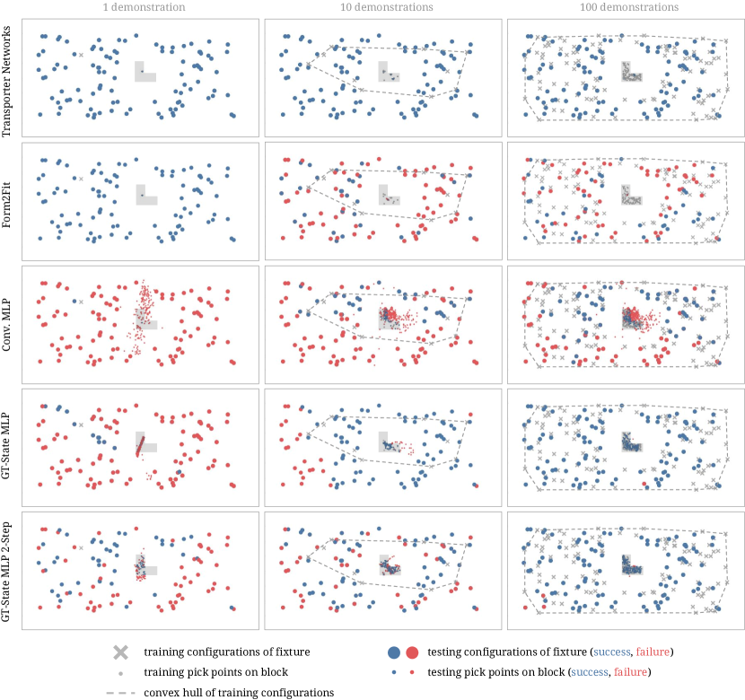
Transporter Networks와 테스트된 베이스라인 모델들의 일반화 능력에 대해 더 나은 정성적 이해를 얻기 위해 Fig. 9을 제공한다. [10]의 분석과 유사하게, 이는 학습 구성의 공간적 분포와 성공/실패한 테스트 구성의 공간적 분포를 보여준다. 이 경우 확률적 데모를 사용한 평행이동 전용 블록 삽입에 대한 것이다. 각 방법에 대해 학습 샘플로부터 내삽 및 외삽하여 대상 고정구의 보이지 않는 새로운 포즈를 처리하는 능력을 시각화한다.
이러한 일반화 플롯에서 볼 수 있듯이, 이 작업에서 Transporter Networks는 단 하나의 데모만으로도 새로운 테스트 에피소드로 외삽할 수 있다. 조밀한 심층 특징 transport 연산은 서로 다른 집기 및 놓기 액션 하에서도 고정구 내 블록의 최적 배치가 유사해 보이도록 만든다(작업의 평행이동 등변성을 활용함). 이는 대부분의 학습 에피소드 주변에서만 성공적으로 내삽하는 것으로 보이는 Conv MLP보다 새로운 객체 구성으로 더 잘 일반화된다(종종 학습 데이터의 하나의 모드로 붕괴됨).
Form2Fit 역시 단일 예시로부터 외삽할 수 있는데, 이는 집기 및 놓기 네트워크(이 역시 FCN으로 모델링됨)가 모두 평행이동 등변성을 갖기 때문이다. 따라서 블록 삽입 작업은 서로 다른 평행이동 하에서 블록과 고정구를 감지하는 것으로 귀결된다. 그러나 데모의 수가 증가하면 매칭 네트워크는 여러 가능한 집기 액션을 여러 가능한 놓기 액션으로 인덱싱하는 픽셀 단위 기술자(descriptor)를 학습해야만 한다. 확률적 데모가 있는 환경에서 매칭 네트워크를 학습하는 데 사용할 수 있는 양의 쌍(positive-pair) 샘플은 희소하며 데모의 집기-놓기 액션 쌍으로만 제한되므로, 블록과 고정구 표면의 픽셀들에 대해 균일하게 기술자를 기하학적으로 정규화하기 어렵다. 테스트 중 사소한 미스매치도 블록의 미세한 정렬 불량을 초래할 수 있으며, 이는 잘못된 배치와 작업 실패로 이어진다. 이는 Form2Fit의 매칭 네트워크가 의미 있는 솔루션으로 성공적으로 수렴하기 위해 상당한 학습 데이터를 필요로 함을 시사한다. Form2Fit의 성공적인 에피소드 분포 역시 작업 공간에 균일하게 분포되어 있으며, 이는 실패가 공간적 내삽 또는 외삽 능력의 부족이 아니라 주로 집기-놓기 액션의 미스매치에서 기인함을 재확인시켜 준다.
데이터가 적은 영역(10개의 데모)에서 GT-State MLP는 작업 성공에 반드시 필요하지 않은 상관관계에 과적합되는 것으로 보인다. 예를 들어, 집기 위치가 대상 고정구의 위치에 조건화되는 현상이 발생한다(실패한 집기 위치 및 고정구 위치의 분포 참조). GT-State MLP를 집기와 놓기의 두 단계로 나눔으로써 잘못된 상관관계 문제가 줄어드는 것을 볼 수 있다. 그러나 학습 데이터의 분포를 넘어서 너무 멀리 외삽하지 못하는 한계는 여전히 남아 있다(예: 100개의 데모를 사용한 GT-State MLP 2-Step에서 고정구의 실패 테스트 구성을 참조할 것, 이는 잘못된 집기 지점 예측을 유발하기도 함).
6.11 소거 연구
Tab. 6은 또한 Transporter Networks의 다양한 소거(ablation) 연구 성능을 보고한다.
No-Transport는 두 개의 FCN을 사용한다. 하나는 집기(picking) 히트맵을 예측하고, 다른 하나는 놓기(placing) 히트맵(이산화된 회전당 하나씩)을 예측한다. 여기서는 트랜스포터 모델이 사용되지 않으므로, 집기 조건부 놓기(pick-conditioned placing)가 존재하지 않는다. 빨간색을 초록색에 놓기와 같은 더 단순한 작업의 경우, 집기 모델이 빨간색 픽셀에서 더 높은 값을 예측하고 놓기 모델이 초록색 픽셀에서 더 높은 값을 예측한다면 이것으로 충분할 수 있다. 또는 블록 삽입 작업의 경우, 집기 모델이 블록의 동일한 위치를 감지하고 놓기 모델이 고정구(fixture)에서 그에 대응하는 동일한 위치와 방향을 감지한다면 충분할 수 있다. 그러나 보이지 않는 상자 모서리를 정렬하는 것과 같이 추가적인 시각적 추론이 필요한 작업을 수행하는 것은 훨씬 더 어렵다. 상자를 팔레트에 적재하고 포장하는 작업의 경우, 학습된 정책은 일반적으로 상자 중 몇 개를 목표 영역에 놓을 수는 있지만, 55% 이상의 높은 완료 점수를 달성하기 위해 상자들을 서로 밀착하여 정렬하는 데는 실패한다.
Per-Pixel-CE-Loss는 Transporter Network의 변형으로, 이미지 전체에 대한 교차 엔트로피 손실(단일 확률 분포를 나타냄)을 각 픽셀이 자체 확률 분포를 나타내는 픽셀별 교차 엔트로피로 대체한 것이다. 학습 과정에서 모든 시연 집기 및 놓기 동작에 대해, 데이터에서 풀려난(unraveled) 집기 및 놓기 픽셀이 각각 모델의 양성 샘플(positive sample)로 선택되는 한편, 다른 모든 위치에서 100개의 임의의 음성 픽셀(negative pixel)이 고정된 수로 샘플링된다. 일반적으로 우리의 실험은 이 모델이 i) 수렴하는 데 더 많은 학습 반복이 필요하고, ii) 시간이 지남에 따라 손실을 정규화하기 위해 양성과 음성의 비율을 맞추는 더 많은 하이퍼파라미터 튜닝이 필요함을 시사한다.
| block-insertion | place-red-in-green | towers-of-hanoi | align-box-corner | stack-block-pyramid | ||||||||||||||||
| Method | 1 | 10 | 100 | 1000 | 1 | 10 | 100 | 1000 | 1 | 10 | 100 | 1000 | 1 | 10 | 100 | 1000 | 1 | 10 | 100 | 1000 |
| Per-Pixel-CE-Loss | 89.0 | 88.0 | 91.0 | 90.0 | 87.5 | 100 | 100 | 100 | 29.6 | 57.0 | 57.9 | 64.6 | 46.0 | 65.0 | 73.0 | 77.0 | 23.0 | 28.0 | 33.7 | 36.0 |
| No-Transport | 5.0 | 8.0 | 6.0 | 8.0 | 81.5 | 95.7 | 100 | 100 | 2.1 | 3.6 | 4.7 | 3.3 | 9.0 | 7.0 | 11.0 | 15.0 | 8.0 | 13.2 | 16.0 | 25.8 |
| palletizing-boxes | assembling-kits | packing-boxes | manipulating-rope | sweeping-piles | ||||||||||||||||
| 1 | 10 | 100 | 1000 | 1 | 10 | 100 | 1000 | 1 | 10 | 100 | 1000 | 1 | 10 | 100 | 1000 | 1 | 10 | 100 | 1000 | |
| Per-Pixel-CE-Loss | 40.3 | 41.5 | 39.1 | 42.7 | 12.8 | 48.0 | 50.0 | 52.6 | 44.8 | 58.1 | 58.9 | 68.1 | 4.9 | 29.7 | 28.8 | 38.9 | 30.3 | 29.9 | 37.5 | 39.6 |
| No-Transport | 44.3 | 50.4 | 53.6 | 54.1 | 0.6 | 4.0 | 1.8 | 2.8 | 11.3 | 40.1 | 42.3 | 53.5 | 33.5 | 35.3 | 38.8 | 40.0 | 13.7 | 18.8 | 28.8 | 38.1 |
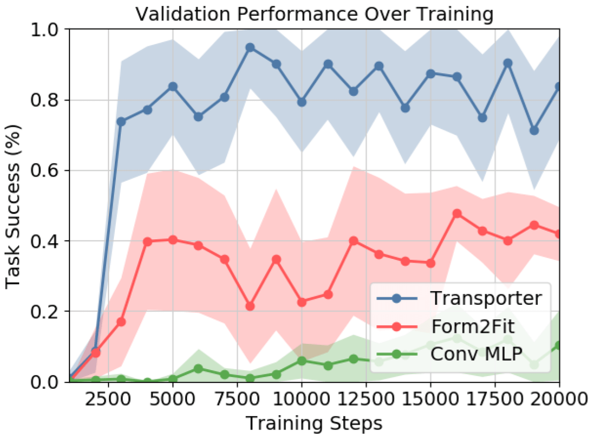
6.12 학습 수렴성(Training Convergence)
우리는 의 고정된 학습률을 사용하여 Adam [53]으로 Transporter Network를 학습시킨다. 우리의 모델은 Tensorflow에서 처음부터(즉, 무작위 초기화로) 학습된다. 오른쪽에는 로프를 조작하는 100회의 시연을 통한 학습 과정의 수렴 플롯 예시를 보여준다. 이미지 기반 베이스라인과 비교할 때, Transporter Network는 일반적으로 더 빠르게 수렴하며, 수천 번의 학습 반복 내, 즉 실제 시간으로 1~2시간 내에 수렴한다.
6.13 Transporter Network 예측 시각화
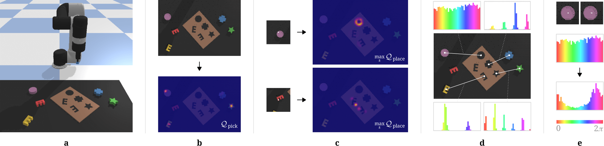
Fig. 10은 키트 조립 작업(1,000회의 시연으로 학습됨)에 대한 Transporter Network의 및 의 조밀한 픽셀 단위 예측과, 예측된 모드가 물체의 위치, 모양 및 조건부 집기에 따라 어떻게 변하는지 시각화한다. 이러한 시각화는 회전 및 평행이동 등변성(equivariance) 덕분에 우리의 방법이 데이터의 대칭성을 반영하는 모드를 빠르게 학습할 수 있음을 보여준다.
이러한 시각화는 또한 흥미로운 실패 모드를 보여주는데, 보이지 않는 E자형 물체의 예측된 놓기 위치가 여러 개의 180도 뒤집힌 거짓 양성을 반환한다는 점이다(Fig. 10c 참조). 이는 이 작업에서 학습된 특징이 국부적 기하학적 구조에 크게 의존하기 때문이다. E자 모양은 새로 보는 물체이므로, 뒤집힌 E자 모양도 그곳에서 거짓 양성 신호를 반환할 만큼 충분히 유사해 보인다(가장 높은 모드가 될 정도는 아니지만).
6.14 실세계 실험 상세 정보
Transporter Network의 실세계 성능을 입증하기 위해, 우리는 우리의 접근 방식을 두 가지 도전적인 실세계 작업에 적용한다. 하나는 집기와 놓기를 통해 구강청결제 병 키트를 조립하는 작업이고, 다른 하나는 밀기(pushing)를 통해 작은 바둑돌 무리를 쓰는(sweeping) 작업이다. 이 작업들은 Fig. 11에 나타나 있다.
키트 조립의 경우, 우리는 동일한 모양의 물품들이 담긴 "보관함"에서 5개의 작은 구강청결제 병을 순차적으로 집어, 배치를 위한 5개의 대응하는 홈이 있는 "키트"에 각각 놓는다. 이는 집기 위치의 다중 모드성(multi-modality)과 모호성(보관함에 집을 수 있는 동일한 물품이 많음)뿐만 아니라 대상 키트의 조밀한 밀리미터 단위 공차로 인해 까다로운 작업이다. 이는 소비자 포장을 위해 물품을 블리스터 팩에 넣는 생산 로봇 작업을 모방하도록 설계되었다. 키트 조립과 분해는 별개의 작업으로 취급되며, 두 작업 모두 동일한 Transporter Network 아키텍처를 사용하고 추론 시 두 작업 간에 자율적으로 전환된다. Table 5에 나타난 바와 같이, 우리의 모델은 인간의 시연으로부터 기록된 8,141개의 집기 및 놓기 동작으로 학습되어 키트 조립에서 98.9%를 달성한다. 집기 성공률과 분해 성공률은 모두 99% 이상이다.
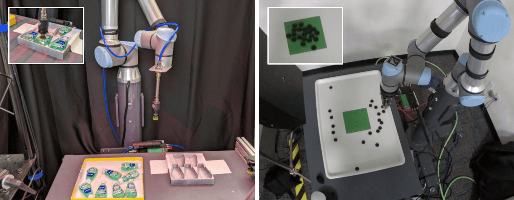
쓸기 작업의 경우, 우리는 초록색 테이프로 표시된 목표 영역으로 작은 바둑돌 무리를 순차적으로 밀어 넣는다. 작업이 완료되면 로봇은 스크립트된 스크램블링 동작을 통해 자율적으로 리셋된다. 이 작업은 폐루프 시각 피드백을 사용하여 동작을 순서대로 수행하고 이를 효율적으로 수행하는 모델의 능력을 테스트하므로 까다롭다. Table 5에 나타난 바와 같이, 우리의 모델은 인간의 시연으로부터 기록된 6,759개의 밀기 동작으로 학습되어 이 작업에서 98.3%를 달성한다. 작업을 완료하는 데 필요한 평균 쓸기 횟수는 20 2.5회이며, 가장 빠른 실행은 16회, 가장 느린 실행은 25회이다. 참고로 인간의 원격 조작 평균은 18.1회 쓸기이다.
두 작업 모두에 대해 시스템을 학습시키기 위해, 우리는 원격 조작 인터페이스를 통해 획득한 인간 시연 데이터를 사용한다. 인간 시연의 차선책적이고 편향되며 노이즈가 있는 분포는 로봇 정책 학습에 추가적인 과제를 제시한다. 또한, 다양한 숙련도와 성능 수준을 가진 13명의 원격 조작자가 학습 데이터를 제공하므로, 우리가 학습하는 정답(ground-truth) 동작의 분산이 더욱 증가하고 결과적으로 학습 작업의 난이도가 높아진다.
하드웨어 구성
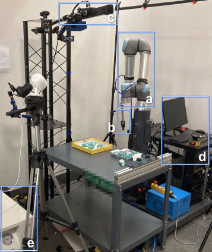
키트 조립을 위한 하드웨어 구성은 Fig 12에 나와 있다. 우리의 실험은 2개의 Universal Robots UR5 워크스테이션(하나는 키트 조립용, 하나는 쓸기용)을 사용하며, 각 워크스테이션에는 산업용 Linux PC, 진공 시스템, Piab 흡착컵 또는 브러시 말단 효과기(end-effector), 깊이 카메라(워크스테이션 위에 고정 장착됨)가 포함되어 있다. 다양한 데이터 소스에 대한 우리 방법의 강인함을 테스트하기 위해, 키트 조립에는 Photoneo PhoXi Model M의 고품질 깊이 카메라 관측치를 사용하고, 쓸기에는 저가형 소비자 등급 Azure Kinect의 관측치를 사용한다. Photoneo 카메라는 해상도에서 깊이(0.1mm 정격 깊이 정밀도)와 회색조 IR 이미지를 모두 제공한다. Kinect 카메라는 해상도에서 깊이와 컬러 RGB 이미지를 제공한다.
로봇 좌표계 내에서 카메라를 캘리브레이션하기 위해 우리는 2단계 절차를 사용한다. 첫째, 다양한 방향에서 대형 평면 QR 코드 패널의 여러 이미지를 촬영하여 카메라의 내부 파라미터(intrinsics)를 캘리브레이션하며, 카메라 내부 파라미터를 계산하기 위해 OpenCV를 사용한다. 둘째, 외부 파라미터(extrinsics)를 캘리브레이션하기 위해 UR5 손목 관절에 QR 코드 태그를 부착하고 무작위 말단 작동기(end-effector) 포즈에서 로봇의 여러 이미지를 촬영한다. 그런 다음 이 이미지들을 사용하여 확률적 최적화(stochastic optimization) 절차를 통해 로봇 베이스의 위치와 해당 관절에 대한 QR 태그의 오프셋을 구한다.
로봇에 내장된 리눅스 시스템은 로봇 및 카메라 데이터를 수집하여 인터넷을 통해 원격 조종자(teleoperator)에게 전달한다. 로봇에 전달되는 모든 명령은 대기열에 추가되어 하나씩 처리된다. 모든 데이터는 모델 학습 및 평가를 위해 네트워크를 통해 클라우드 스토리지 데이터베이스에 실시간으로 기록된다.
데이터 수집
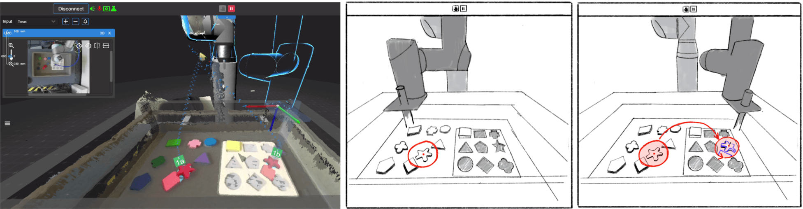
우리는 로봇 워크스테이션을 원격으로 제어하기 위해 Unity [46]로 스크립트된 2D 사용자 인터페이스(UI)를 설계했다. 이 UI의 개요는 그림 13에 나와 있다. 이 UI의 기능에는 로봇 워크셀 구성, 흡착 말단 작동기의 이동 및 작동, 매개변수화된 행동 궤적 구성, 로봇의 캘리브레이션, 그리고 우리 모델을 학습시키는 데 사용된 것과 동일한 행동 매개변수화를 사용한 로봇 제어가 포함된다.
표준 원격 조종 세션은 다음과 같다. 작업자는 워크스테이션 깊이 데이터의 3D 렌더링을 본다. 가상 카메라 뷰는 작업자가 원하는 대로 마우스 움직임을 사용하여 회전 및 이동할 수 있다. 작업자는 렌더링된 깊이 기하 구조에서 의도한 집기 지점을 선택하여 어떤 물체를 집을지 마우스 클릭으로 결정한다. 집기 위치 주변의 포인트 클라우드 영역이 마우스 커서에 "부착"되며, 여기서 투명하게 렌더링되어 기존 깊이 이미지 위에 오버레이된다(그림 13에 예시됨). 작업자는 마우스의 움직임으로 이 기하 구조를 이동할 수 있으며, 단일 회전 자유도는 마우스 휠로 제어된다. 작업자가 물체를 원하는 위치로 이동하면, 추가 마우스 클릭을 통해 3자유도(3DOF) 놓기(place) 위치를 선택하게 된다. 이 인터페이스는 작업자가 행동을 실행하기 전에 픽앤플레이스(pick-and-place) 작업의 의도된 3D 구성을 시각화할 수 있도록 한다. 이 이산적인 원격 조종 픽앤플레이스 위치는 데카르트 제어기(Cartesian controller)를 사용하여 조밀한 로봇 궤적으로 변환되고, 충돌 및 기타 안전 제약 조건을 검사한 후 로봇에서 실행된다. 그런 다음 사용자는 작업이 완료될 때까지 이 과정을 반복한다.
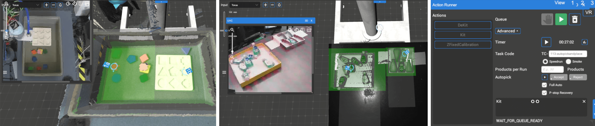
트랜스포터 네트워크(Transporter Networks) 모델을 실행할 때 인간 원격 조종 중에 사용되는 것과 동일한 데이터 파이프라인 및 모션 프리미티브를 사용한다는 점에 유의해야 한다. 인간의 UI 상호작용은 우리의 추론 결과로 대체되며, 조립(assembly) 작업과 분해(disassembly) 작업 간의 전환을 위한 추가적인 로직이 추가된다. 자율 모드는 표준 UI 내에서 먼저 실행할 작업(고유 작업 코드 식별자 사용)을 입력하고 시작을 누름으로써 실행된다. 이를 위한 UI(및 추론 결과의 시각화)는 그림 14에 나와 있다.
위 시스템을 사용하여 우리는 키트 조립 모델을 학습시키기 위해 13명의 인간 작업자로부터 약 8,141개의 픽앤플레이스 행동을 수집했고, 모델 성능 검증 및 하이퍼파라미터 튜닝을 위해 추가로 2,300개의 행동을 수집했으며, 쓸기(sweeping) 모델을 학습시키기 위해 6,759개의 밀기(pushing) 행동을 수집했다.
성공 감지
섹션 4.2의 로봇 상에서의 평가를 위해, 우리는 로봇 행동의 성공 또는 실패 여부를 수동으로 라벨링한다. 그러나 이 과정은 시간과 비용이 많이 든다. 또한, 우리의 트랜스포터 네트워크는 다중 행동 키팅(kitting) 에피소드가 언제 종료되는지(성공이든 실패든) 추정하지 않는다. 따라서 수동 성공 라벨링 없이 완전 자율 픽앤플레이스를 수행하기 위해, 자동 작업 수준 성공 신호가 구현되었다. 우리는 완전한 키트, 빈 키트, 또는 부분적인 키트를 감지하기 위해 3방향 분류(3-way classification)를 수행하도록 ImageNet 분류로 사전 학습된 ResNet50 분류 모델을 학습시켰다. 우리는 독특한 카메라 각도에서 촬영한 4,848개의 학습 샘플로 분류기를 학습시키고 128개의 검증 세트 샘플로 평가했다. 검증 세트에서의 평균 분류 정확도는 96.9%였다. 픽앤플레이스 시도가 완료되면, RGB 이미지에 대한 분류기 추론을 통해 성공 메트릭이 생성되며, 이는 키팅(또는 키트 비우기) 에피소드의 성공적인 완료를 표시한다. 이를 통해 시스템의 완전 자율 모드는 완료 시 작업(키팅 및 비우기) 간을 교대로 전환할 수 있다.